The function ggstatsplot::ggcoefstats generates dot-and-whisker plots for regression models saved in tidy data frames (produced with the broom package and its mixed-effects modeling variant broom.mixed package).
By default, the plot displays 95% confidence intervals for the regression coefficients. The function currently supports only those classes of object that are supported by the broom package. For an exhaustive list, see- https://broom.tidyverse.org/articles/available-methods.html
In this vignette, we will see examples of how to use this function. We will try to cover as many classes of objects as possible. Unfortunately, there is no single dataset that will be helpful for carrying out all types of regression analyses and, therefore, we will use various datasets to explore data-specific hypotheses using regression models.
Note before: The following demo uses the pipe operator (%>%), so in case you are not familiar with this operator, here is a good explanation: http://r4ds.had.co.nz/pipes.html
General structure of the plots
Although the statistical models displayed in the plot may differ based on the class of models being investigated, there are few aspects of the plot that will be invariant across models:
The dot-whisker plot contains a dot representing the estimate and their confidence intervals (
95%is the default). The estimate can either be effect sizes (for tests that depend on theFstatistic) or regression coefficients (for tests withtandzstatistic), etc. The function will, by default, display a helpfulx-axis label that should clear up what estimates are being displayed. The confidence intervals can sometimes be asymmetric if bootstrapping was used.The caption will always contain diagnostic information, if available, about models that can be useful for model selection: The smaller the Akaike’s Information Criterion (AIC) and the Bayesian Information Criterion (BIC) values, the “better” the model is. Additionally, the higher the log-likelihood value the “better” is the model fit.
The output of this function will be a
ggplot2object and, thus, it can be further modified (e.g., change themes, etc.) withggplot2functions.
Most of the regression models that are supported in the broom and broom.mixed packages with tidy and glance methods are also supported by ggcoefstats. For example-
aareg, anova, aov, aovlist, Arima, bigglm, biglm, brmsfit, btergm, cch, clm, clmm, confusionMatrix, coxph, drc, epi.2by2, ergm, felm, fitdistr, glmerMod, glmmTMB, gls, gam, Gam, gamlss, garch, glm, glmmadmb, glmmTMB, glmrob, gmm, ivreg, lm, lm.beta, lmerMod, lmodel2, lmrob, mcmc, MCMCglmm, mediate, mjoint, mle2, mlm, multinom, nlmerMod, nlrq, nls, orcutt, plm, polr, ridgelm, rjags, rlm, rlmerMod, rq, speedglm, speedlm, stanreg, survreg, svyglm, svyolr, svyglm, etc.
In the following examples, we will try out a number of regression models and, additionally, we will also see how we can change different aspects of the plot itself.
omnibus ANOVA (aov)
For this analysis, let’s use the movies_long dataset, which provides information about IMDB ratings, budget, length, MPAA ratings (R-rated, PG, or PG-13), and genre for a number of movies. Let’s say our hypothesis is that the IMDB ratings for a movie are predicted by a multiplicative effect of the genre and the MPAA rating it got. Let’s carry out an omnibus ANOVA to see if this is the case.
# loading needed libraries
library(ggstatsplot)
library(ggplot2)
# for reproducibility
set.seed(123)
# to speed up the calculation, let's use only 10% of the data
movies_10 <- dplyr::sample_frac(tbl = ggstatsplot::movies_long, size = 0.1)
# plot
ggstatsplot::ggcoefstats(
x = stats::aov(
formula = rating ~ mpaa * genre,
data = movies_10
),
effsize = "eta", # changing the effect size estimate being displayed
partial = FALSE, # just eta-squared
point.color = "red", # changing the point color
point.size = 4, # changing the point size
point.shape = 15, # changing the point shape
package = "dutchmasters", # package from which color paletter is to be taken
palette = "milkmaid", # color palette for labels
title = "omnibus ANOVA" # title for the plot
) +
# further modification with the ggplot2 commands
# note the order in which the labels are entered
ggplot2::scale_y_discrete(labels = c("MPAA", "Genre", "Interaction term")) +
ggplot2::labs(
x = "effect size estimate (partial omega-squared)",
y = NULL
)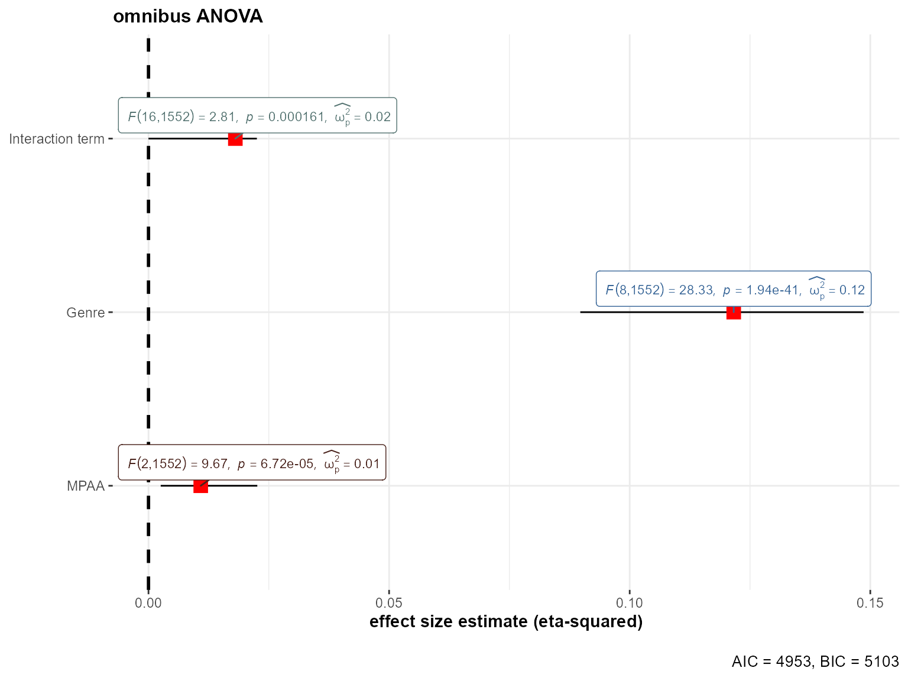
As this plot shows, there is no interaction effect between these two factors.
Note that we can also use this function for model selection. You can try out different models with the code below and see how the AIC, BIC, and log-likelihood values change. Looking at the model diagnostics, you should be able to see that the model with only genre as the predictor of ratings seems to perform almost equally well as more complicated additive and multiplicative models. Although there is certainly some improvement with additive and multiplicative models, it is by no means convincing enough for us to abandon a simpler model.
library(ggstatsplot)
# to speed up the calculation, let's use only 10% of the data
movies_10 <- dplyr::sample_frac(tbl = ggstatsplot::movies_long, size = 0.1)
# for reproducibility
set.seed(123)
# plot
ggstatsplot::combine_plots(
# model 1
ggstatsplot::ggcoefstats(
x = stats::aov(
formula = rating ~ mpaa,
data = movies_10
),
stats.label.color = "black",
title = "1. Only MPAA ratings"
),
ggstatsplot::ggcoefstats(
x = stats::aov(
formula = rating ~ genre,
data = movies_10
),
stats.label.color = "black",
title = "2. Only genre"
),
ggstatsplot::ggcoefstats(
x = stats::aov(
formula = rating ~ mpaa + genre,
data = movies_10
),
stats.label.color = "black",
title = "3. Additive effect of MPAA and genre"
),
ggstatsplot::ggcoefstats(
x = stats::aov(
formula = rating ~ mpaa * genre,
data = movies_10
),
stats.label.color = "black",
title = "4. Multiplicative effect of MPAA and genre"
),
title.text = "Model selection using ggcoefstats",
labels = c("(a)", "(b)", "(c)", "(d)")
)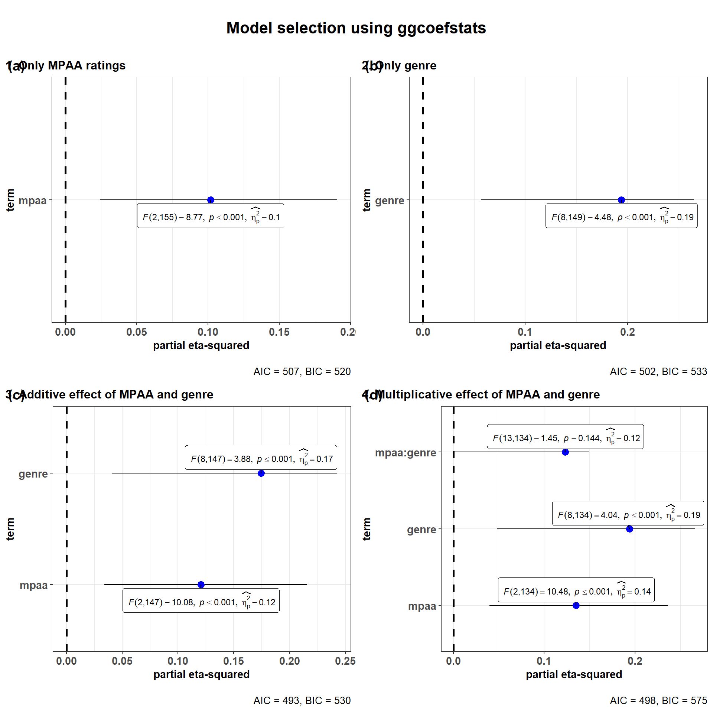
omnibus ANOVA (anova)
You can also use car package to run an omnibus ANOVA:
# dataset will be used from `car` package
library(car)
# creating a model
mod <- stats::lm(
formula = conformity ~ fcategory * partner.status,
data = Moore,
contrasts = list(fcategory = contr.sum, partner.status = contr.sum)
)
# plotting estimates
ggstatsplot::ggcoefstats(
x = car::Anova(mod, type = "III"),
title = "analysis of variance (`car` package)"
)
#> Note: No model diagnostics information available for the object of class anova .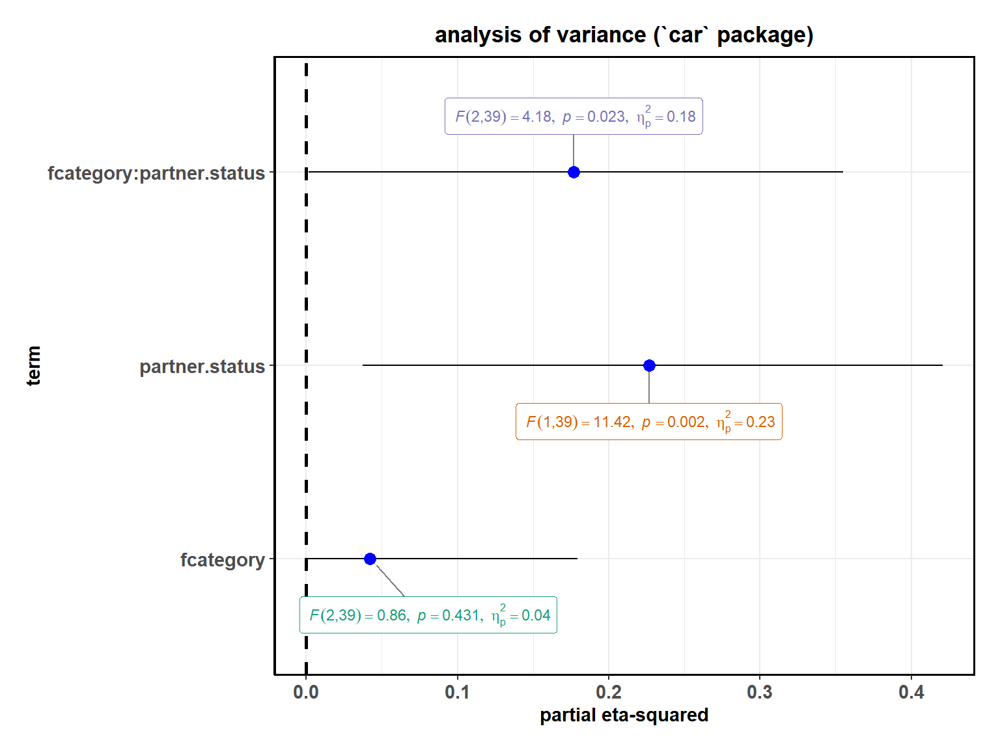
linear model (lm)
Now that we have figured out that the movie’s genre explains a fair amount of the variation in how people rate the movie on IMDB, let’s run a linear regression model to see how different types of genres compare with each other using Action movies as our comparison point.
# plot
ggstatsplot::ggcoefstats(
x = stats::lm(
formula = rating ~ genre,
data = dplyr::filter(
.data = ggstatsplot::movies_long,
genre %in% c(
"Action",
"Action Comedy",
"Action Drama",
"Comedy",
"Drama",
"Comedy Drama"
)
)
),
conf.level = 0.99, # changing the confidence levels for confidence intervals
sort = "ascending", # sorting the terms of the model based on estimate values
label.direction = "both", # direction in which to adjust position of labels (both x and y)
ggtheme = ggplot2::theme_gray(), # changing the default theme
stats.label.color = c("#CC79A7", "darkgreen", "#0072B2", "black", "red"),
title = "Movie ratings by their genre",
subtitle = "Source: www.imdb.com"
) +
# further modification with the ggplot2 commands
# note the order in which the labels are entered
ggplot2::scale_y_discrete(labels = c("Comedy", "Action Comedy", "Action Drama", "Comedy Drama", "Drama")) +
ggplot2::labs(y = "Genre compared to Action movies)") +
ggplot2::theme(axis.title.y = ggplot2::element_text(size = 14, face = "bold"))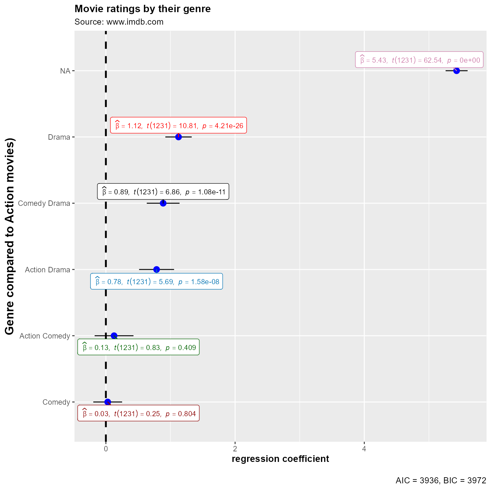
As can be seen from the regression coefficients, compared to action movies, comedies and action comedies are not rated significantly better. All three of the “drama” types (pure, action or comedy dramas) have statistical significantly higher regression coefficients. This finding occurs even with our more conservative 0.99 confidence interval.
linear mixed-effects model (lmer/lmerMod)
Now let’s say we want to see how movie’s budget relates to how good the movie is rated to be on IMDB (e.g., more money, better ratings?). But we have reasons to believe that the relationship between these two variables might be different for different genres (e.g., budget might be a good predictor of how good the movie is rated to be for animations or actions movies as more money can help with better visual effects and animations, but this may not be true for dramas, so we don’t want to use stats::lm. In this case, therefore, we will be running a linear mixed-effects model (using lme4::lmer and p-values generated using the sjstats::p_values function) with a random slope for the genre variable.
# set up
library(lme4)
library(ggstatsplot)
set.seed(123)
# to speed up the calculation, let's use only 10% of the data
movies_10 <- dplyr::sample_frac(tbl = ggstatsplot::movies_long, size = 0.1)
# combining the two different plots
ggstatsplot::combine_plots(
# model 1: simple linear model
ggstatsplot::ggcoefstats(
x = stats::lm(
formula = scale(rating) ~ scale(budget),
data = movies_10
),
title = "linear model",
stats.label.color = "black",
exclude.intercept = FALSE # show the intercept
) +
ggplot2::labs(x = parse(text = "'standardized regression coefficient' ~italic(beta)")),
# model 2: linear mixed-effects model
ggstatsplot::ggcoefstats(
x = lme4::lmer(
formula = scale(rating) ~ scale(budget) + (budget | genre),
data = movies_10,
control = lme4::lmerControl(calc.derivs = FALSE)
),
p.kr = FALSE,
title = "linear mixed-effects model",
stats.label.color = "black",
exclude.intercept = FALSE # show the intercept
) +
ggplot2::labs(
x = parse(text = "'standardized regression coefficient' ~italic(beta)"),
y = "fixed effects"
),
labels = c("(a)", "(b)"),
nrow = 2,
ncol = 1,
title.text = "Relationship between movie budget and its IMDB rating"
)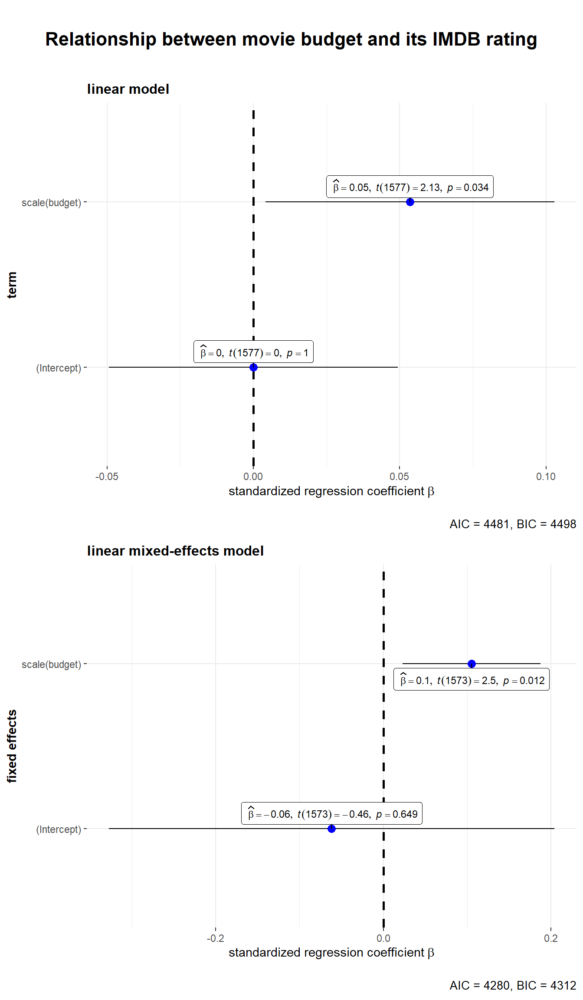
As can be seen from these plots, although there seems to be a really small correlation between budget and rating in a linear model, this effect is not significant once we take into account the hierarchical structure of the data.
Note that for mixed-effects models, only the fixed effects are shown because there are no confidence intervals for random effects terms. In case, you would like to see these terms, you can enter the same object you entered as x argument to ggcoefstats in broom::tidy:
set.seed(123)
# to speed up the calculation, let's use only 10% of the data
movies_10 <- dplyr::sample_frac(tbl = ggstatsplot::movies_long, size = 0.1)
# tidy output
broom.mixed::tidy(
x = lme4::lmer(
formula = scale(rating) ~ scale(budget) + (budget | genre),
data = movies_10,
control = lme4::lmerControl(calc.derivs = FALSE)
),
conf.int = TRUE,
conf.level = 0.95
)
#> # A tibble: 6 x 8
#> effect group term estimate std.error statistic conf.low conf.high
#> <chr> <chr> <chr> <dbl> <dbl> <dbl> <dbl> <dbl>
#> 1 fixed <NA> (Intercep~ -4.98e-2 0.147 -0.339 -0.338 0.238
#> 2 fixed <NA> scale(bud~ 4.28e-2 0.0806 0.531 -0.115 0.201
#> 3 ran_pa~ genre sd__(Inte~ 3.87e-1 NA NA NA NA
#> 4 ran_pa~ genre cor__(Int~ -1.00e+0 NA NA NA NA
#> 5 ran_pa~ genre sd__budget 8.43e-4 NA NA NA NA
#> 6 ran_pa~ Resid~ sd__Obser~ 9.49e-1 NA NA NA NA
robust linear mixed-effects models (rlmer)
Robust version of lmer (as implemented in robustlmm package) is also supported-
set.seed(123)
library(robustlmm)
# model
roblmm.mod <- robustlmm::rlmer(
formula = scale(Reaction) ~ scale(Days) + (Days | Subject),
data = sleepstudy,
rho.sigma.e = psi2propII(smoothPsi, k = 2.28),
rho.sigma.b = chgDefaults(smoothPsi, k = 5.11, s = 10)
)
# plot
ggstatsplot::ggcoefstats(
x = roblmm.mod,
title = "robust estimation of linear mixed-effects model"
)
#> Note: No model diagnostics information available for the object of class rlmerMod .
#> Note: No p-values and/or statistic available for regression coefficients from rlmerMod object;
#> skipping labels with stats.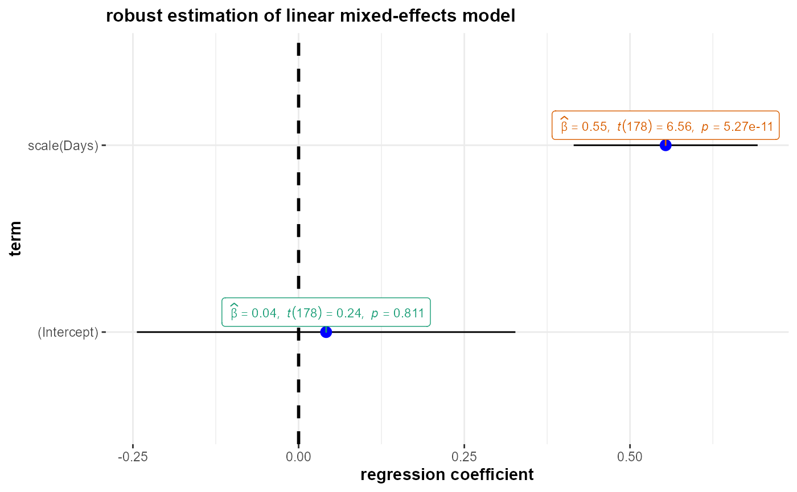
non-linear mixed-effects model (nlmer/nlmerMod)
# model
library(lme4)
set.seed(123)
startvec <- c(Asym = 200, xmid = 725, scal = 350)
nm1 <- lme4::nlmer(circumference ~ SSlogis(age, Asym, xmid, scal) ~ Asym | Tree,
Orange,
start = startvec
)
# plot
ggstatsplot::ggcoefstats(
x = nm1,
title = "non-linear mixed-effects model"
)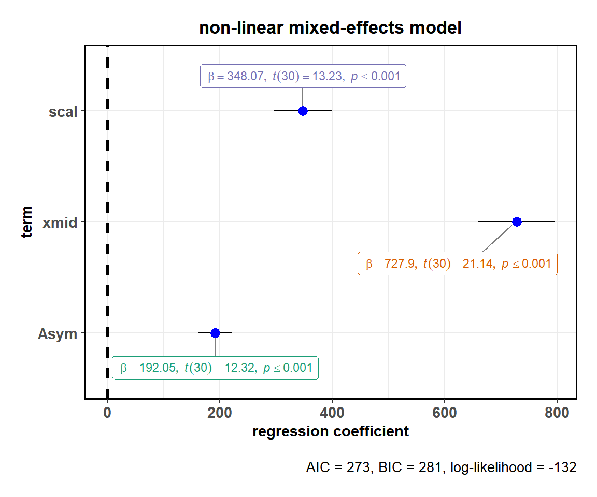
non-linear least-squares model (nls)
So far we have been assuming a linear relationship between movie budget and rating. But what if we want to also explore the possibility of a non-linear relationship? In that case, we can run a non-linear least squares regression. Note that you need to choose some non-linear function, which will be based on prior exploratory data analysis (y ~ k/x + c implemented here, but you can try out other non-linear functions, e.g. Y ~ k * exp(-b*c)).
library(ggstatsplot)
# to speed up the calculation, let's use only 10% of the data
movies_10 <- dplyr::sample_frac(tbl = ggstatsplot::movies_long, size = 0.1)
# plot
ggstatsplot::ggcoefstats(
x = stats::nls(
formula = rating ~ k / budget + c, # try toying around with the form of non-linear function
data = movies_10,
start = list(k = 1, c = 0)
),
title = "non-linear least squares regression",
subtitle = "Non-linear relationship between budget and rating"
)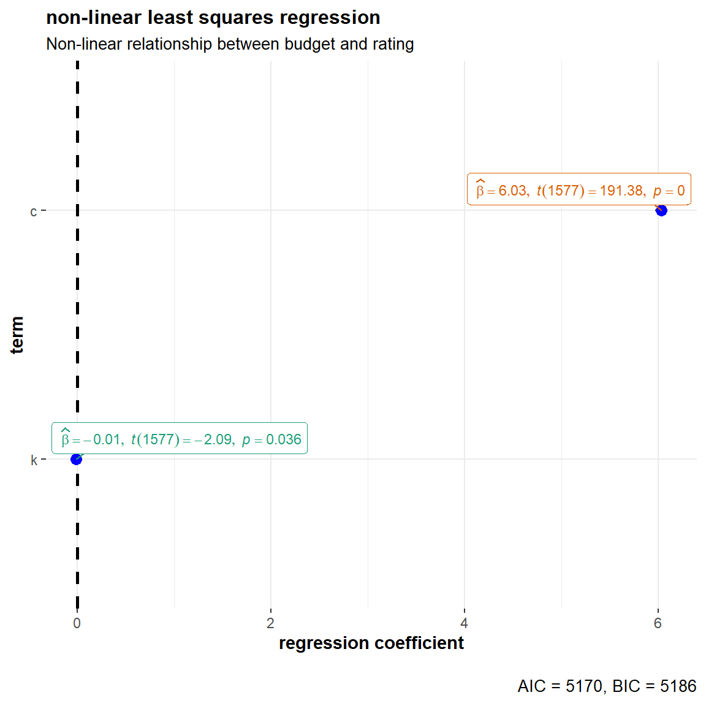
This analysis shows that there is indeed a possible non-linear association between rating and budget (non-linear regression term k is significant), at least with the particular non-linear function we used.
generalized linear model (glm)
In all the analyses carried out thus far, the outcome variable (y in y ~ x) has been continuous. In case the outcome variable is nominal/categorical/factor, we can use the generalized form of linear model that works even if the response is a numeric vector or a factor vector, etc.
To explore this model, we will use the Titanic dataset, which tabulates information on the fate of passengers on the fatal maiden voyage of the ocean liner Titanic, summarized according to economic status (class), sex, age, and survival. Let’s say we want to know what was the strongest predictor of whether someone survived the Titanic disaster-
library(ggstatsplot)
# having a look at the Titanic dataset
df <- as.data.frame(x = Titanic)
str(df)
#> 'data.frame': 32 obs. of 5 variables:
#> $ Class : Factor w/ 4 levels "1st","2nd","3rd",..: 1 2 3 4 1 2 3 4 1 2 ...
#> $ Sex : Factor w/ 2 levels "Male","Female": 1 1 1 1 2 2 2 2 1 1 ...
#> $ Age : Factor w/ 2 levels "Child","Adult": 1 1 1 1 1 1 1 1 2 2 ...
#> $ Survived: Factor w/ 2 levels "No","Yes": 1 1 1 1 1 1 1 1 1 1 ...
#> $ Freq : num 0 0 35 0 0 0 17 0 118 154 ...
# plot
ggstatsplot::ggcoefstats(
x = stats::glm(
formula = Survived ~ Sex + Age,
data = df,
weights = df$Freq, # vector containing weights (no. of observations per row)
family = stats::binomial(link = "logit") # choosing the family
),
exponentiate = TRUE,
ggtheme = ggthemes::theme_economist_white(),
title = "generalized linear model (glm)",
vline.color = "red",
vline.linetype = "solid",
label.segment.color = "red",
stats.label.size = 3.5,
stats.label.color = c(
"orangered",
"dodgerblue"
)
)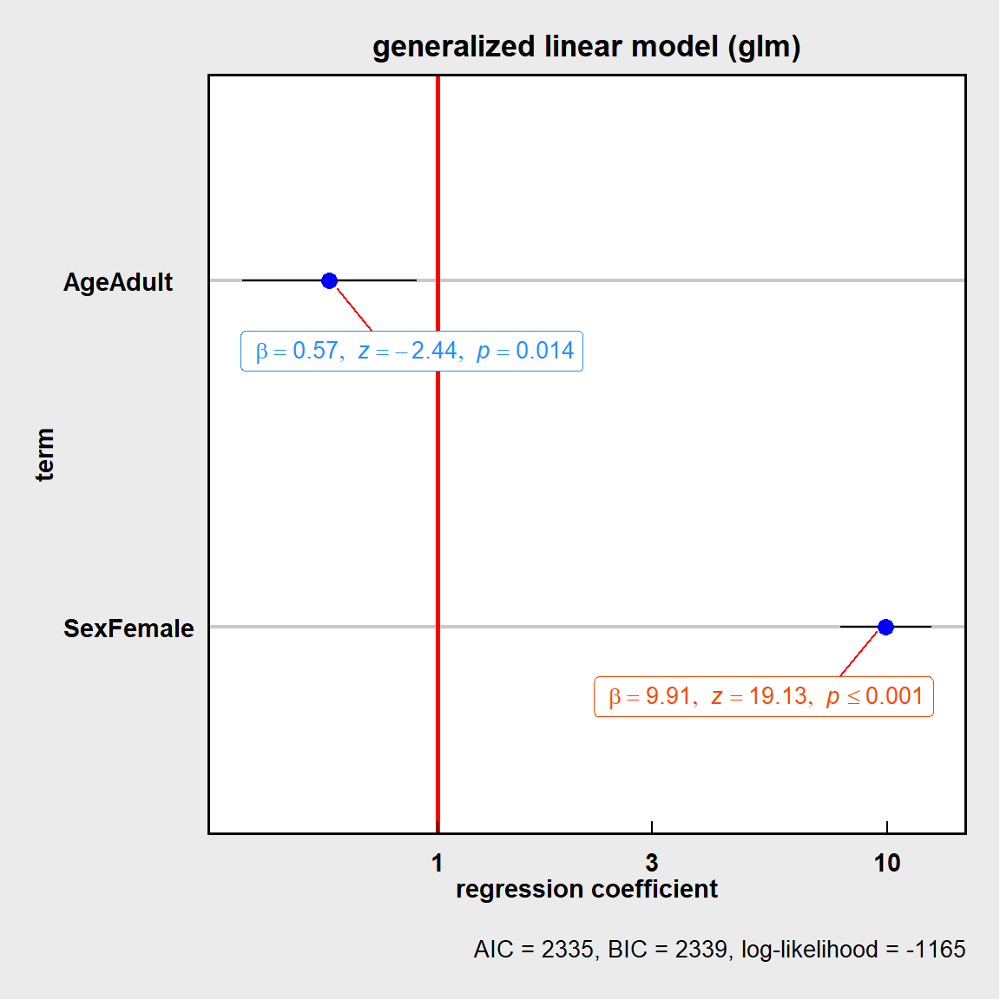
As can be seen from the regression coefficients, all entered predictors were significant predictors of the outcome. More specifically, being a female was associated with higher likelihood of survival (compared to male). On other hand, being an adult was associated with decreased likelihood of survival (compared to child).
Note: Few things to keep in mind for glm models,
The exact statistic will depend on the family used. Below we will see a host of different function calls to
glmwith a variety of different families.Some families will have a
tstatistic associated with them, while others azstatistic. The function will figure this out for you.
# creating dataframes to use for regression analyses
library(ggstatsplot)
# dataframe #1
(
df.counts <-
base::data.frame(
treatment = gl(n = 3, k = 3, length = 9),
outcome = gl(n = 3, k = 1, length = 9),
counts = c(18, 17, 15, 20, 10, 20, 25, 13, 12)
) %>%
tibble::as_tibble(x = .)
)
#> # A tibble: 9 x 3
#> treatment outcome counts
#> <fct> <fct> <dbl>
#> 1 1 1 18
#> 2 1 2 17
#> 3 1 3 15
#> 4 2 1 20
#> 5 2 2 10
#> 6 2 3 20
#> 7 3 1 25
#> 8 3 2 13
#> 9 3 3 12
# dataframe #2
(df.clotting <- data.frame(
u = c(5, 10, 15, 20, 30, 40, 60, 80, 100),
lot1 = c(118, 58, 42, 35, 27, 25, 21, 19, 18),
lot2 = c(69, 35, 26, 21, 18, 16, 13, 12, 12)
) %>%
tibble::as_tibble(x = .))
#> # A tibble: 9 x 3
#> u lot1 lot2
#> <dbl> <dbl> <dbl>
#> 1 5 118 69
#> 2 10 58 35
#> 3 15 42 26
#> 4 20 35 21
#> 5 30 27 18
#> 6 40 25 16
#> 7 60 21 13
#> 8 80 19 12
#> 9 100 18 12
# dataframe #3
x1 <- stats::rnorm(50)
y1 <- stats::rpois(n = 50, lambda = exp(1 + x1))
(df.3 <- data.frame(x = x1, y = y1) %>%
tibble::as_tibble(x = .))
#> # A tibble: 50 x 2
#> x y
#> <dbl> <int>
#> 1 1.56 12
#> 2 0.0705 5
#> 3 0.129 3
#> 4 1.72 14
#> 5 0.461 8
#> 6 -1.27 0
#> 7 -0.687 0
#> 8 -0.446 4
#> 9 1.22 11
#> 10 0.360 2
#> # ... with 40 more rows
# dataframe #4
x2 <- stats::rnorm(50)
y2 <- rbinom(
n = 50,
size = 1,
prob = stats::plogis(x2)
)
(df.4 <- data.frame(x = x2, y = y2) %>%
tibble::as_tibble(x = .))
#> # A tibble: 50 x 2
#> x y
#> <dbl> <int>
#> 1 -0.779 1
#> 2 -0.375 1
#> 3 -0.319 1
#> 4 0.0845 0
#> 5 -0.768 1
#> 6 -0.626 0
#> 7 -0.901 0
#> 8 0.664 1
#> 9 0.300 1
#> 10 0.0749 1
#> # ... with 40 more rows
# combining all plots in a single plot
ggstatsplot::combine_plots(
# Family: Poisson
ggstatsplot::ggcoefstats(
x = stats::glm(
formula = counts ~ outcome + treatment,
data = df.counts,
family = stats::poisson(link = "log")
),
title = "Family: Poisson",
stats.label.color = "black"
),
# Family: Gamma
ggstatsplot::ggcoefstats(
x = stats::glm(
formula = lot1 ~ log(u),
data = df.clotting,
family = stats::Gamma(link = "inverse")
),
title = "Family: Gamma",
stats.label.color = "black"
),
# Family: Quasi
ggstatsplot::ggcoefstats(
x = stats::glm(
formula = y ~ x,
family = quasi(variance = "mu", link = "log"),
data = df.3
),
title = "Family: Quasi",
stats.label.color = "black"
),
# Family: Quasibinomial
ggstatsplot::ggcoefstats(
x = stats::glm(
formula = y ~ x,
family = stats::quasibinomial(link = "logit"),
data = df.4
),
title = "Family: Quasibinomial",
stats.label.color = "black"
),
# Family: Quasipoisson
ggstatsplot::ggcoefstats(
x = stats::glm(
formula = y ~ x,
family = stats::quasipoisson(link = "log"),
data = df.4
),
title = "Family: Quasipoisson",
stats.label.color = "black"
),
# Family: Gaussian
ggstatsplot::ggcoefstats(
x = stats::glm(
formula = Sepal.Length ~ Species,
family = stats::gaussian(link = "identity"),
data = iris
),
title = "Family: Gaussian",
stats.label.color = "black"
),
labels = c("(a)", "(b)", "(c)", "(d)", "(e)", "(f)"),
ncol = 2,
title.text = "Exploring models with different `glm` families",
title.color = "blue"
)
generalized linear mixed-effects model (glmer/glmerMod)
In the previous example, we saw how being a female and being a child was predictive of surviving the Titanic disaster. But in that analysis, we didn’t take into account one important factor: the passenger class in which people were traveling. Naively, we have reasons to believe that the effects of sex and age might be dependent on the class (maybe rescuing passengers in the first class were given priority?). To take into account this hierarchical structure of the data, we can run generalized linear mixed effects model with a random slope for class.
# plot
ggstatsplot::ggcoefstats(
x = lme4::glmer(
formula = Survived ~ Sex + Age + (Sex + Age | Class),
# select 20% of the sample to reduce the time of execution
data = dplyr::sample_frac(tbl = ggstatsplot::Titanic_full, size = 0.2),
family = stats::binomial(link = "logit"),
control = lme4::glmerControl(
optimizer = "Nelder_Mead",
calc.derivs = FALSE,
boundary.tol = 1e-7
)
),
title = "generalized linear mixed-effects model",
exponentiate = TRUE,
stats.label.color = "black"
)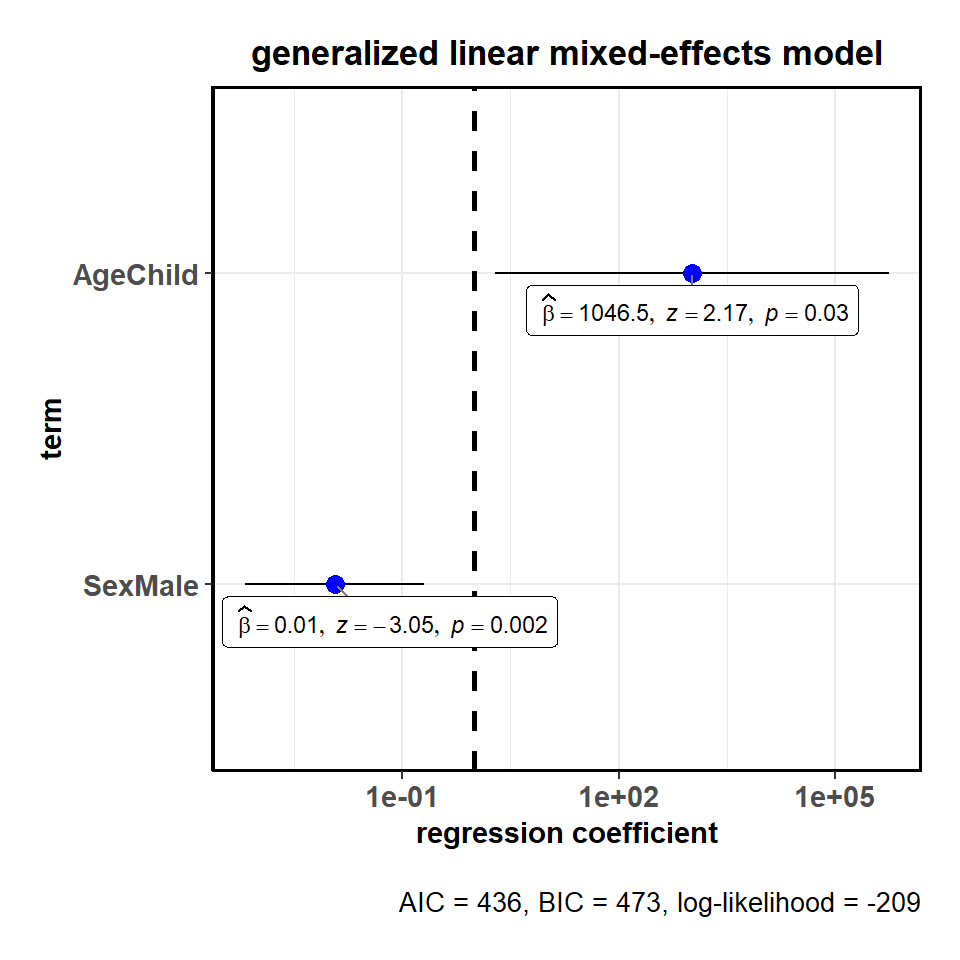
As we had expected, once we take into account the differential relationship that might exist between survival and predictors across different passenger classes, only the sex factor remain a significant predictor. In other words, being a female was the strongest predictor of whether someone survived the tragedy that befell the Titanic.
generalized linear mixed models using Template Model Builder (glmmTMB)
glmmTMB package allows for flexibly fitting generalized linear mixed models (GLMMs) and extensions. Model objects from this package are also supported.
# set up
library(glmmTMB)
library(lme4)
set.seed(123)
# model
mod <-
glmmTMB::glmmTMB(
formula = Reaction ~ Days + (Days | Subject),
data = sleepstudy,
family = glmmTMB::truncated_poisson()
)
# plotting the model
ggstatsplot::ggcoefstats(
x = mod,
conf.method = "uniroot",
title = "generalized linear mixed models \nusing Template Model Builder"
)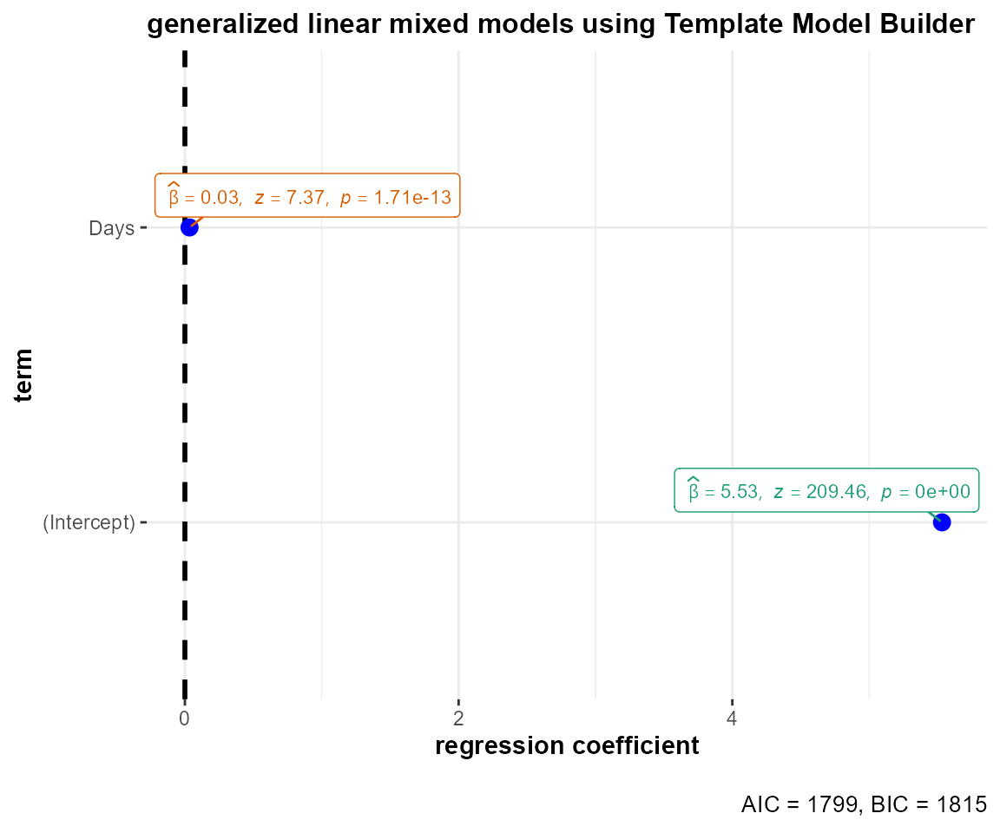
generalized linear mixed models using AD Model Builder (glmmadmb)
Another option is to use glmmadmb package.
# setup
library(glmmADMB)
set.seed(123)
# simulate values
set.seed(101)
d <- data.frame(f = factor(rep(LETTERS[1:10], each = 10)), x = runif(100))
u <- rnorm(10, sd = 2)
d$eta <- with(d, u[f] + 1 + 4 * x)
pz <- 0.3
zi <- rbinom(100, size = 1, prob = pz)
d$y <- ifelse(zi, 0, rpois(100, lambda = exp(d$eta)))
# fit
zipmodel <-
glmmADMB::glmmadmb(
formula = y ~ x + (1 | f),
data = d,
family = "poisson",
zeroInflation = TRUE
)
# plotting the model
ggstatsplot::ggcoefstats(
x = zipmodel,
title = "generalized linear mixed models \nusing AD Model Builder"
)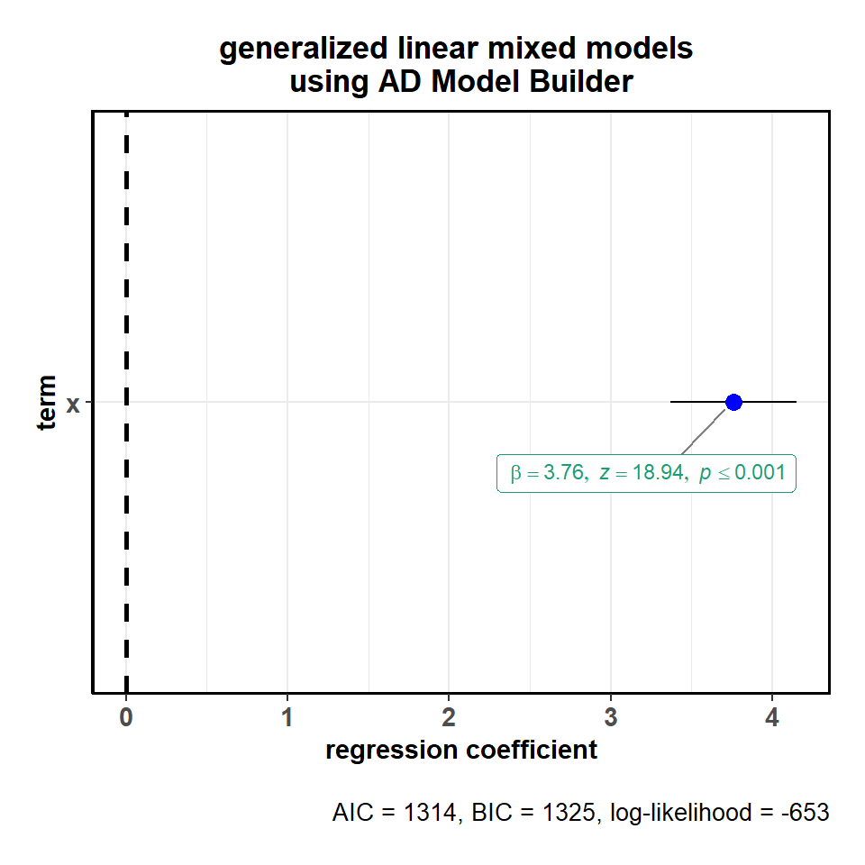
cumulative link models (clm)
So far we have dealt either with continuous or nominal/factor responses (or output variables), but sometimes we will encounter ordinal data (e.g., Likert scale measurement in behavioral sciences). In these cases, ordinal regression models are more suitable. To study these models, we will use intent_morality dataset included in the ggstatsplot package. This dataset contains moral judgments (“how wrong was this behavior?”, “how much punishment does the agent deserve?”; on a Likert scale of 1-7) by participants about third-party actors who harmed someone. There are four different conditions formed out of belief (neutral, negative) and outcome (neutral, negative) for four different vignettes, each featuring a different type of harm. The question we are interested in is what explains variation in participants’ rating: information about intentionality, consequences, or their interaction?
# for reproducibility
set.seed(123)
# to speed up calculations, we will use just 10% of the dataset
ggstatsplot::ggcoefstats(
x = ordinal::clm(
formula = as.factor(rating) ~ belief * outcome,
link = "logit",
data = dplyr::sample_frac(tbl = ggstatsplot::intent_morality, size = 0.10),
control = ordinal::clm.control(
maxIter = 50,
convergence = "silent"
)
),
stats.label.color = "black",
title = "cumulative link model (clm)",
subtitle = "(using `ordinal` package)",
caption.summary = FALSE # suppress model diagnostics
) +
ggplot2::labs(
x = "logit regression coefficient",
y = NULL
)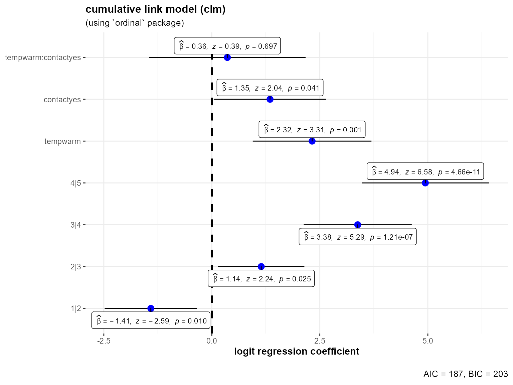
As can be seen from this plot, both factors (intentionality and consequences) were significant, and so was their interaction.
cumulative link mixed models (clmm)
In the previous analysis, we carried out a single ordinal regression models to see the effects intent and outcome information on moral judgments. But what if we also want to account for item level differences (since different items had different types of harm)? For this, we can use ordinal mixed-effects regression model (with random effects for type of harm) to see how intent and outcome contribute towards variation in moral judgment ratings-
# for reproducibility
set.seed(123)
# to speed up calculations, we will use just 10% of the dataset
ggstatsplot::ggcoefstats(
x = ordinal::clmm(
formula = as.factor(rating) ~ belief * outcome + (belief + outcome |
harm),
data = dplyr::sample_frac(tbl = ggstatsplot::intent_morality, size = 0.10),
control = ordinal::clmm.control(
method = "nlminb",
maxIter = 50,
gradTol = 1e-4,
innerCtrl = "noWarn"
)
),
title = "cumulative link mixed model (clmm)",
subtitle = "(using `ordinal` package)"
) +
ggplot2::labs(
x = "coefficient from ordinal mixed-effects regression",
y = "fixed effects"
)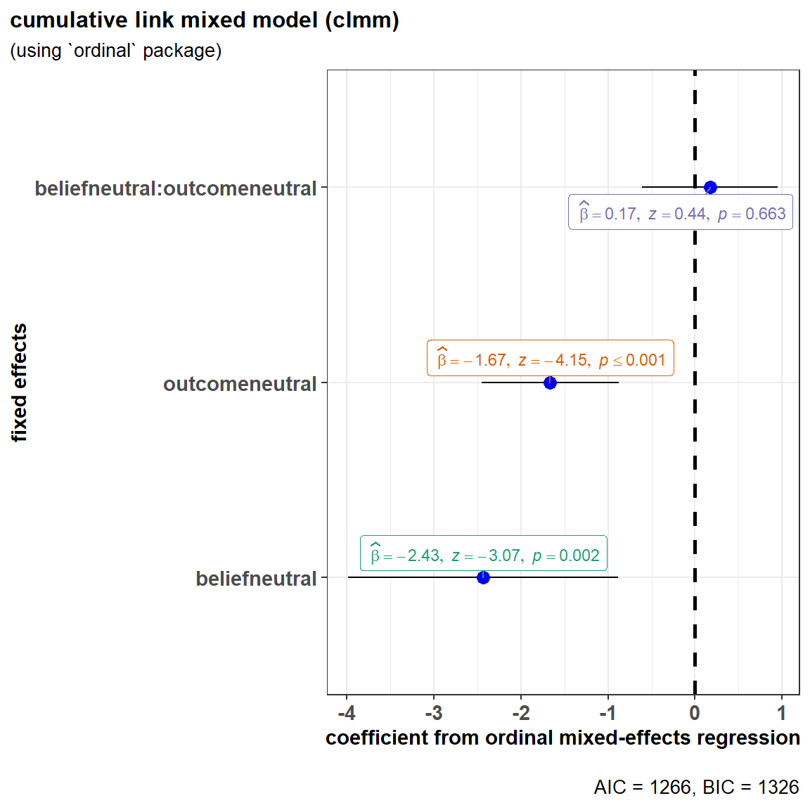
Mixed effects regression didn’t reveal any interaction effect. That is, most of the variance was accounted for by the information about whether there was harmful intent and whether there was harm, at least this is the effect we found with these four types of (minor) harms.
Note that, by default, beta parameters are shown for clm and clmm models, but you can also plot either just alpha or both using ggcoefstats.
# for reproducibility
set.seed(123)
# to speed up calculations, we will use just 10% of the dataset
ggstatsplot::ggcoefstats(
x = ordinal::clmm(
formula = as.factor(rating) ~ belief * outcome + (belief + outcome |
harm),
link = "logit",
data = dplyr::sample_frac(tbl = ggstatsplot::intent_morality, size = 0.10),
control = ordinal::clmm.control(
maxIter = 50,
gradTol = 1e-4,
innerCtrl = "noWarn"
)
)
) +
ggplot2::labs(
x = "logit regression coefficients",
y = "threshold parameters",
title = "cumulative link mixed models"
)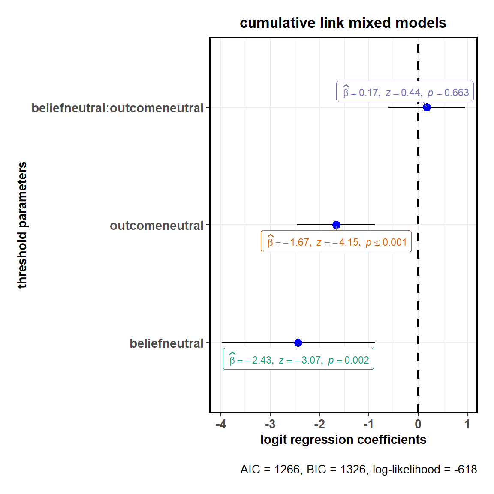
ordered logistic or probit regression (polr)
# polr model
set.seed(123)
library(MASS)
polr.mod <- MASS::polr(
formula = Sat ~ Infl + Type + Cont,
weights = Freq,
data = housing
)
# plot
ggstatsplot::ggcoefstats(
x = polr.mod,
coefficient.type = "both",
title = "ordered logistic or probit regression",
subtitle = "using `MASS` package"
)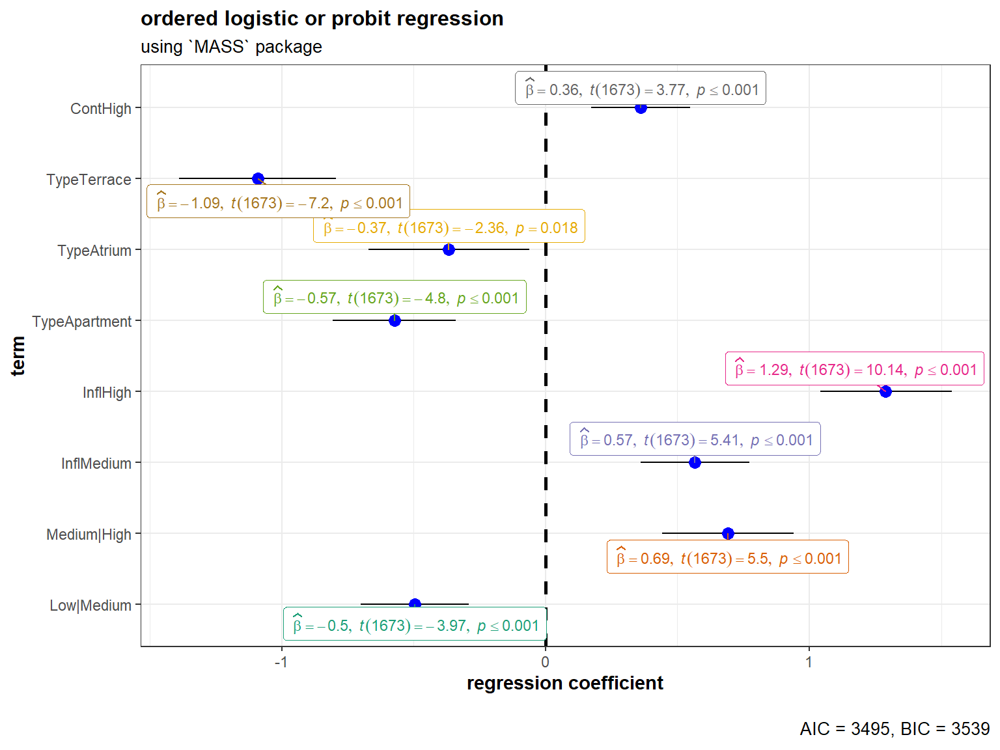
multiple linear regression models (mlm)
# model (converting all numeric columns in data to z-scores)
mod <- stats::lm(
formula = cbind(mpg, disp) ~ wt,
data = purrr::modify_if(.x = mtcars, .p = is.numeric, .f = scale)
)
# plot
ggstatsplot::ggcoefstats(
x = mod,
exclude.intercept = FALSE
)
#> Note: No model diagnostics information available for the object of class mlm .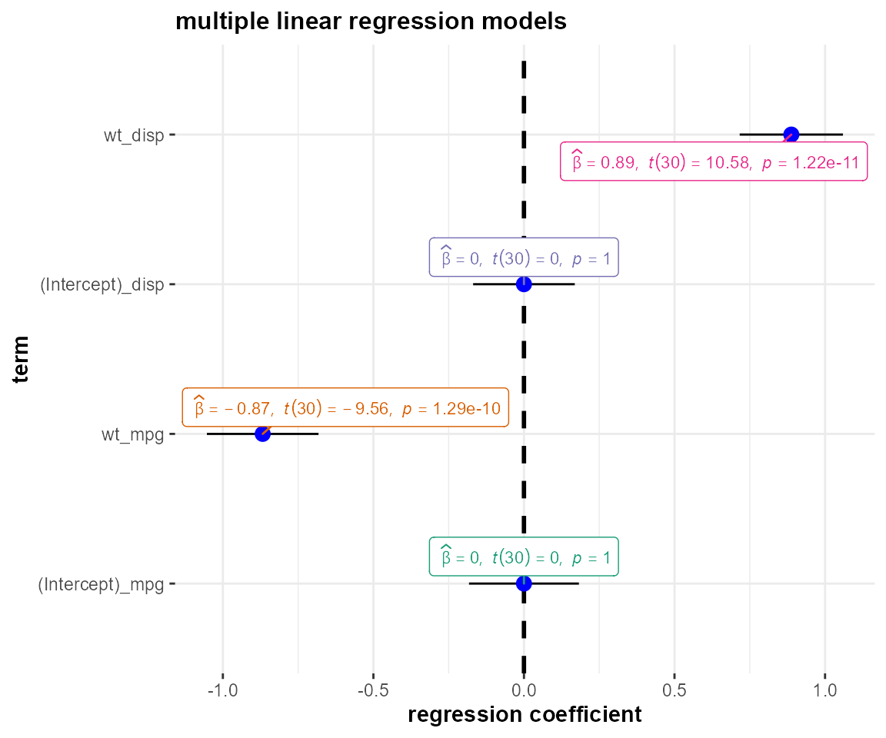
multinomial logistic regression models (multinom)
# model
set.seed(123)
library(nnet)
library(MASS)
utils::example(topic = birthwt, echo = FALSE)
bwt.mu <- nnet::multinom(formula = low ~ ., data = bwt, trace = FALSE)
# plot
ggstatsplot::ggcoefstats(
x = bwt.mu,
title = "multinomial logistic regression models",
package = "ggsci",
palette = "default_ucscgb"
)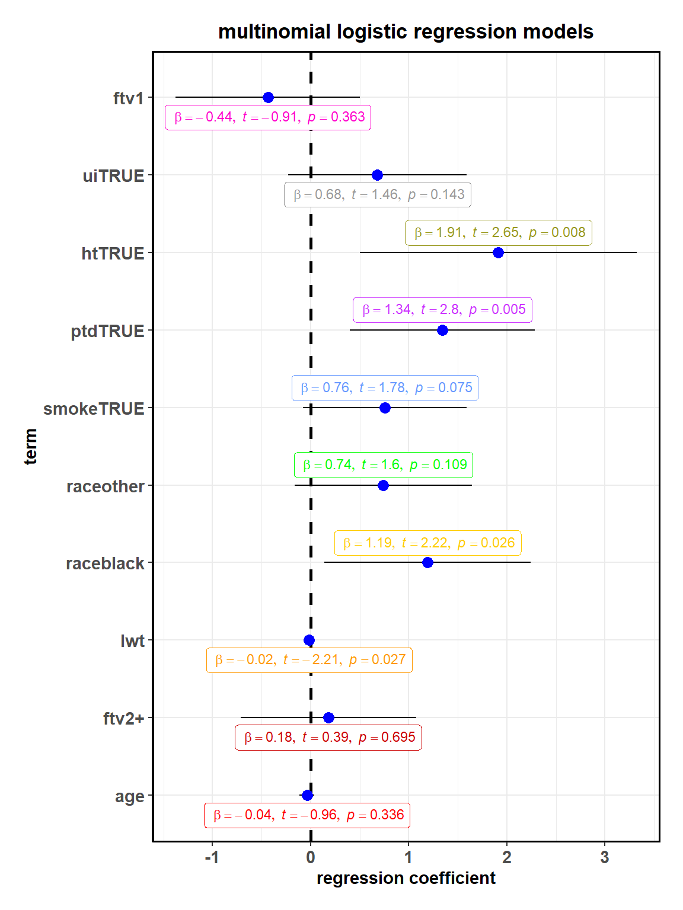
survey-weighted generalized linear models (svyglm)
# data
library(survey)
set.seed(123)
data(api)
dstrat <-
survey::svydesign(
id = ~1,
strata = ~stype,
weights = ~pw,
data = apistrat,
fpc = ~fpc
)
# model
mod <- survey::svyglm(
formula = sch.wide ~ ell + meals + mobility,
design = dstrat,
family = quasibinomial()
)
# plot
ggstatsplot::ggcoefstats(
x = mod,
title = "survey-weighted generalized linear model"
)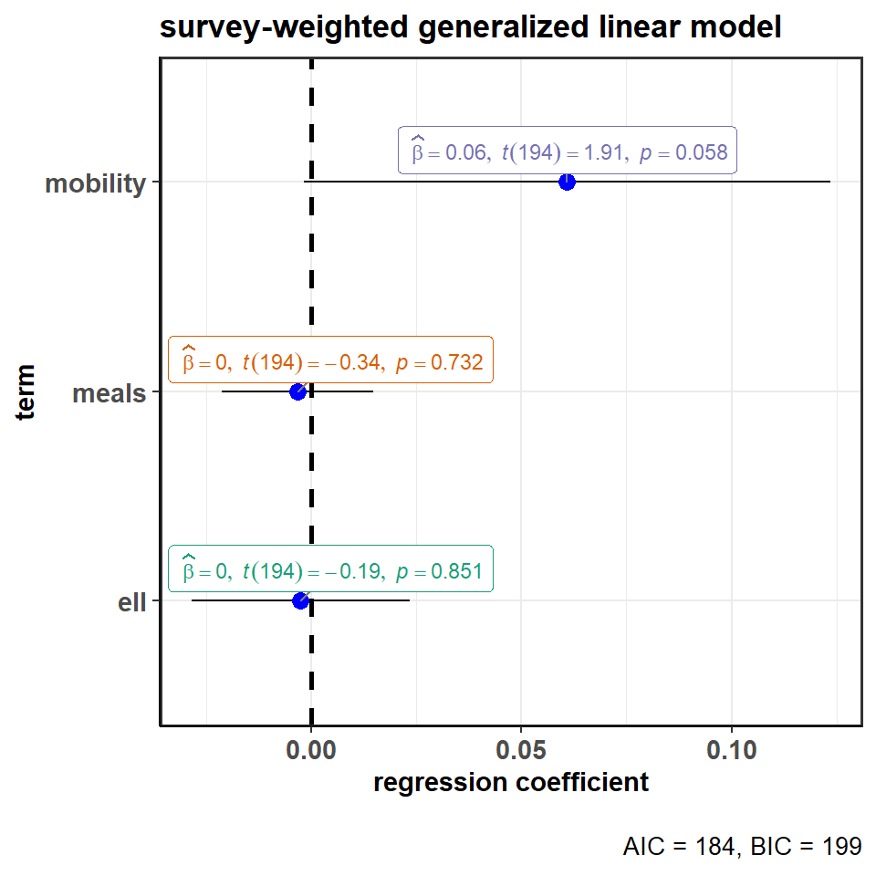
repeated measures ANOVA (aovlist)
Let’s now consider an example of a repeated measures design where we want to run omnibus ANOVA with a specific error structure. To carry out this analysis, we will first have to convert the iris dataset from wide to long format such that there is one column corresponding to attribute (which part of the calyx of a flower is being measured: sepal or petal?) and one column corresponding to measure used (length or width?). Note that this is within-subjects design since the same flower has both measures for both attributes. The question we are interested in is how much of the variance in measurements is explained by both of these factors and their interaction.
# for reproducibility
set.seed(123)
# having a look at iris before converting to long format
dplyr::glimpse(ggstatsplot::iris_long)
#> Observations: 600
#> Variables: 6
#> $ id <int> 1, 2, 3, 4, 5, 6, 7, 8, 9, 10, 11, 12, 13, 14, 15, 1...
#> $ Species <fct> setosa, setosa, setosa, setosa, setosa, setosa, seto...
#> $ condition <fct> Sepal.Length, Sepal.Length, Sepal.Length, Sepal.Leng...
#> $ attribute <fct> Sepal, Sepal, Sepal, Sepal, Sepal, Sepal, Sepal, Sep...
#> $ measure <fct> Length, Length, Length, Length, Length, Length, Leng...
#> $ value <dbl> 5.1, 4.9, 4.7, 4.6, 5.0, 5.4, 4.6, 5.0, 4.4, 4.9, 5....
# let's use 20% of the sample to speed up the analysis
iris_long_20 <- dplyr::sample_frac(tbl = ggstatsplot::iris_long, size = 0.20)
# specifying the model (note the error structure)
ggstatsplot::ggcoefstats(
x = stats::aov(
formula = value ~ attribute * measure + Error(id / (attribute * measure)),
data = iris_long_20
),
effsize = "eta",
partial = FALSE,
nboot = 50,
ggtheme = ggthemes::theme_fivethirtyeight(),
ggstatsplot.layer = FALSE,
stats.label.color = c("#0072B2", "#D55E00", "darkgreen"),
title = "Variation in measurements for Iris species",
subtitle = "Source: Iris data set (by Fisher or Anderson)",
caption = "Results from 2 by 2 RM ANOVA"
) +
ggplot2::theme(plot.subtitle = ggplot2::element_text(size = 11, face = "plain"))
#> Note: No model diagnostics information available for the object of class aovlist .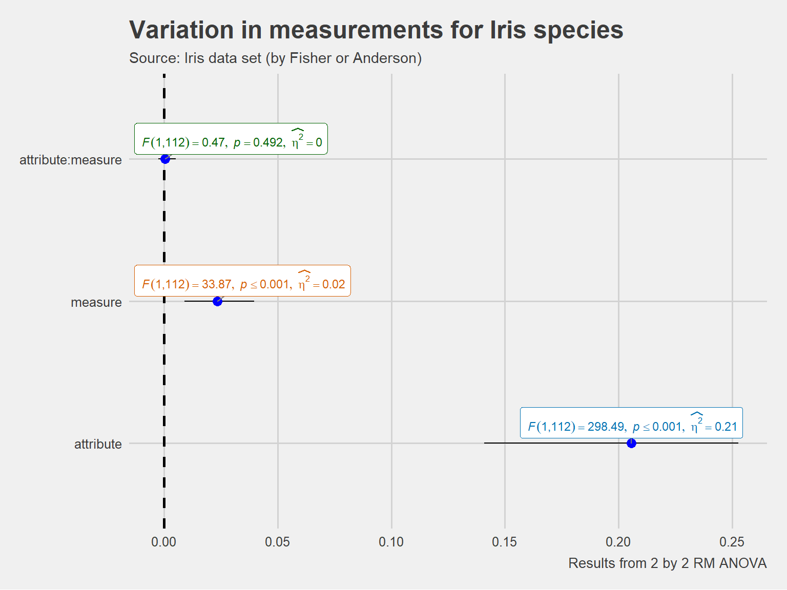
As revealed by this analysis, all effects of this model are significant. But most of the variance is explained by the attribute, with the next important explanatory factor being the measure used. A very little amount of variation in measurement is accounted for by the interaction between these two factors.
robust regression (lmRob, glmRob)
The robust regression models, as implemented in the robust package are also supported.
ggstatsplot::combine_plots(
# plot 1: glmRob
ggstatsplot::ggcoefstats(
x = robust::glmRob(
formula = Survived ~ Sex,
data = dplyr::sample_frac(tbl = ggstatsplot::Titanic_full, size = 0.20),
family = stats::binomial(link = "logit")
),
title = "generalized robust linear model",
package = "dichromat",
palette = "BrowntoBlue.10",
ggtheme = ggthemes::theme_fivethirtyeight(),
ggstatsplot.layer = FALSE
),
# plot 2: lmRob
ggstatsplot::ggcoefstats(
x = robust::lmRob(
formula = Sepal.Length ~ Sepal.Width * Species,
data = iris
),
title = "robust linear model",
package = "awtools",
palette = "a_palette",
ggtheme = ggthemes::theme_tufte(),
ggstatsplot.layer = FALSE
),
# arguments relevant for `combine_plots` function
labels = c("(a)", "(b)"),
title.text = "Robust variants of lmRob and glmRob",
nrow = 2
)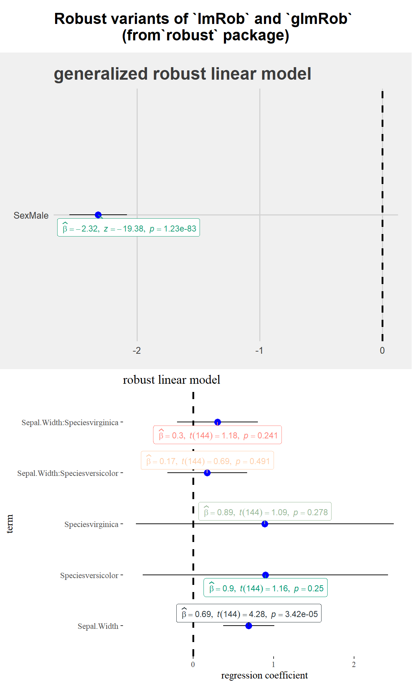
fit a linear model with multiple group fixed effects (felm)
Models of class felm from lfe package are also supported. This method is used to fit linear models with multiple group fixed effects, similarly to lm. It uses the Method of Alternating projections to sweep out multiple group effects from the normal equations before estimating the remaining coefficients with OLS.
library(lfe)
# create covariates
x <- rnorm(1000)
x2 <- rnorm(length(x))
# individual and firm
id <- factor(sample(20, length(x), replace = TRUE))
firm <- factor(sample(13, length(x), replace = TRUE))
# effects for them
id.eff <- rnorm(nlevels(id))
firm.eff <- rnorm(nlevels(firm))
# left hand side
u <- rnorm(length(x))
y <- x + 0.5 * x2 + id.eff[id] + firm.eff[firm] + u
# estimate and print result
est <- lfe::felm(formula = y ~ x + x2 | id + firm)
# plot
ggstatsplot::ggcoefstats(
x = est,
title = "linear model with multiple group fixed effects"
)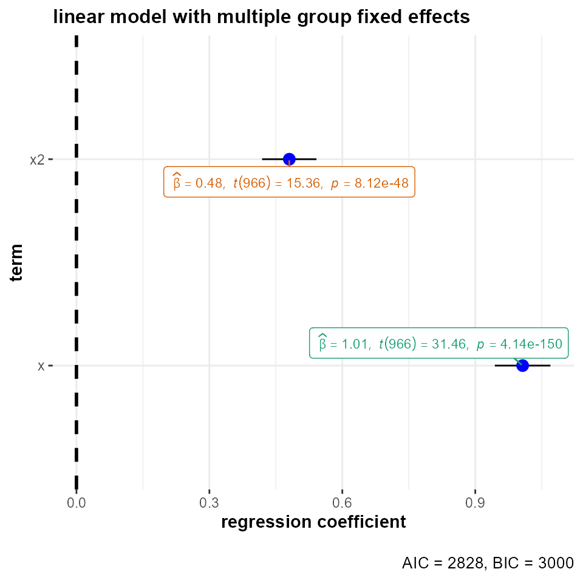
linear models for panel data (plm)
# data
set.seed(123)
library(plm)
data("Produc", package = "plm")
# model
plm.mod <- plm(log(gsp) ~ log(pcap) + log(pc) + log(emp) + unemp,
data = Produc, index = c("state", "year")
)
# plot
ggstatsplot::ggcoefstats(
x = plm.mod,
title = "linear models for panel data"
)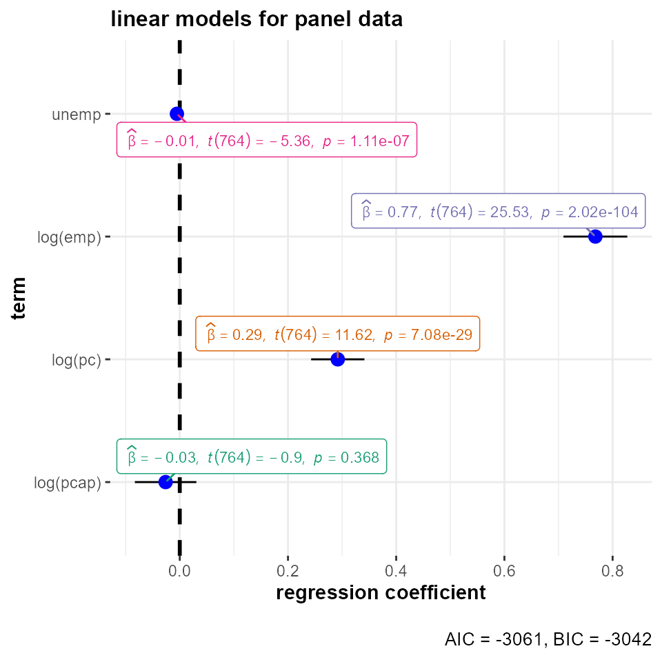
Cox proportional hazards regression model (coxph)
Fitted proportional hazards regression model - as implemented in the survival package - can also be displayed in a dot-whisker plot.
# for reproducibility
set.seed(123)
library(survival)
# create the simplest test data set
test1 <- list(
time = c(4, 3, 1, 1, 2, 2, 3),
status = c(1, 1, 1, 0, 1, 1, 0),
x = c(0, 2, 1, 1, 1, 0, 0),
sex = c(0, 0, 0, 0, 1, 1, 1)
)
# fit a stratified model
mod <- survival::coxph(
formula = Surv(time, status) ~ x + strata(sex),
data = test1
)
# plot
ggstatsplot::ggcoefstats(
x = mod,
exponentiate = TRUE,
title = "Cox proportional hazards regression model"
)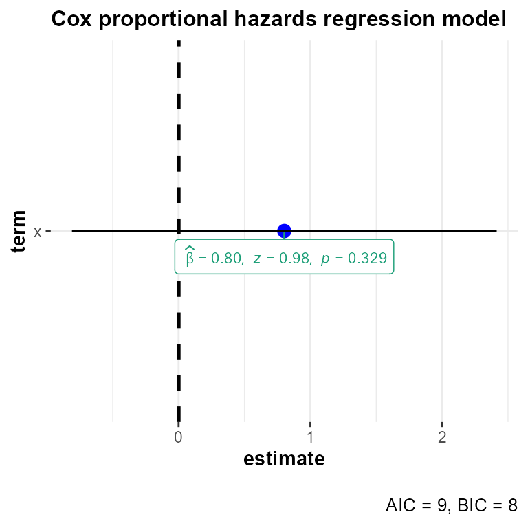
autoregressive integrated moving average (Arima)
# for reproducibility
set.seed(123)
# model
fit <- stats::arima(x = lh, order = c(1, 0, 0))
# plot
ggstatsplot::ggcoefstats(
x = fit,
title = "autoregressive integrated moving average"
)
#> Note: No p-values and/or statistic available for regression coefficients from Arima object;
#> skipping labels with stats.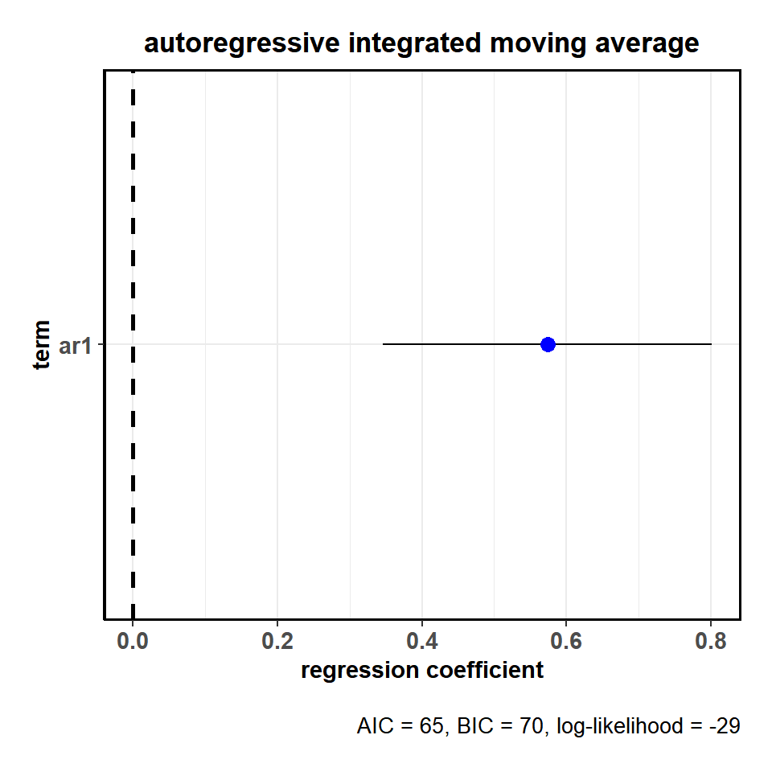 ## high performance linear model (speedlm/speedglm)
Example of high performance linear model-
# model
set.seed(123)
mod <- speedglm::speedlm(
formula = mpg ~ wt + qsec,
data = mtcars,
fitted = TRUE
)
# plot
ggstatsplot::ggcoefstats(
x = mod,
title = "high performance linear model",
exclude.intercept = FALSE
)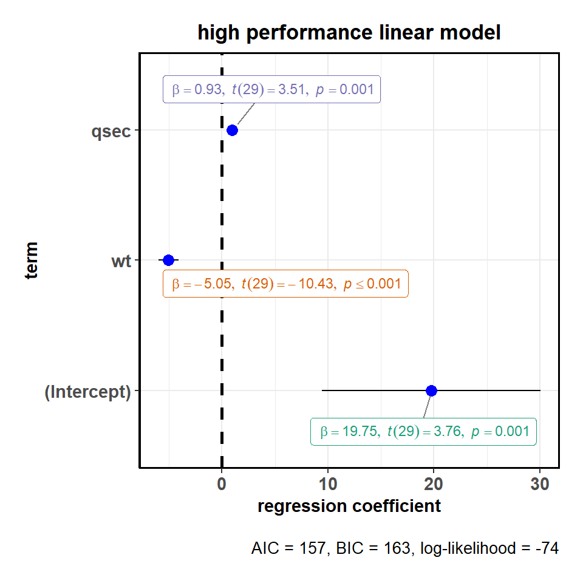
Example of high performance generalized linear model-
# setup
set.seed(123)
library(speedglm)
# data
n <- 50000
k <- 5
y <- rgamma(n, 1.5, 1)
x <- round(matrix(rnorm(n * k), n, k), digits = 3)
colnames(x) <- paste("s", 1:k, sep = "")
da <- data.frame(y, x)
fo <- as.formula(paste("y~", paste(paste("s", 1:k, sep = ""), collapse = "+")))
# model
mod <- speedglm::speedglm(
formula = fo,
data = da,
family = stats::Gamma(log)
)
# plot
ggstatsplot::ggcoefstats(
x = mod,
title = "high performance generalized linear model"
)
#> Note: No model diagnostics information available for the object of class speedglm .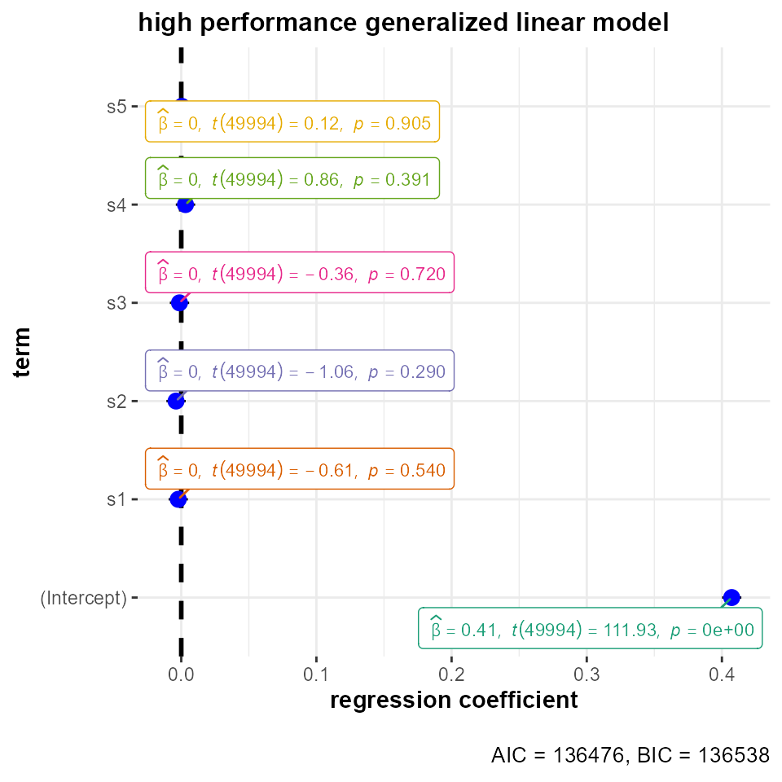
bounded memory linear regression (biglm)
# model
set.seed(123)
bfit <- biglm::biglm(
formula = scale(mpg) ~ scale(wt) + scale(disp),
data = mtcars
)
# plot
ggstatsplot::ggcoefstats(
x = bfit,
title = "bounded memory linear regression",
exclude.intercept = FALSE
)
#> Note: No p-values and/or statistic available for regression coefficients from biglm object;
#> skipping labels with stats.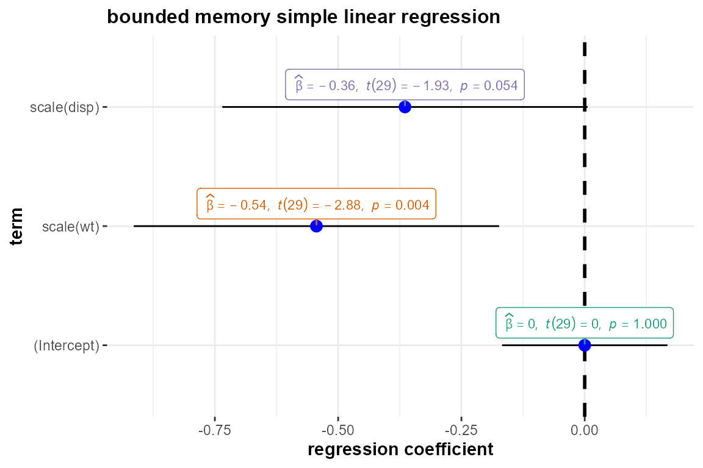
bounded memory general linear regression (bigglm)
# setup
set.seed(123)
library(biglm)
data(trees)
# model
mod <- biglm::bigglm(
formula = log(Volume) ~ log(Girth) + log(Height),
data = trees,
chunksize = 10,
sandwich = TRUE
)
# plot
ggstatsplot::ggcoefstats(
x = mod,
title = "bounded memory general linear regression"
)
#> Note: No p-values and/or statistic available for regression coefficients from bigglm object;
#> skipping labels with stats.
parametric survival regression model (survreg)
# setup
set.seed(123)
library(survival)
# model
mod <- survival::survreg(
formula = Surv(futime, fustat) ~ ecog.ps + rx,
data = ovarian,
dist = "logistic"
)
# plot
ggstatsplot::ggcoefstats(
x = mod,
exclude.intercept = FALSE,
ggtheme = hrbrthemes::theme_ipsum_rc(),
package = "ggsci",
palette = "legacy_tron",
title = "parametric survival regression model"
)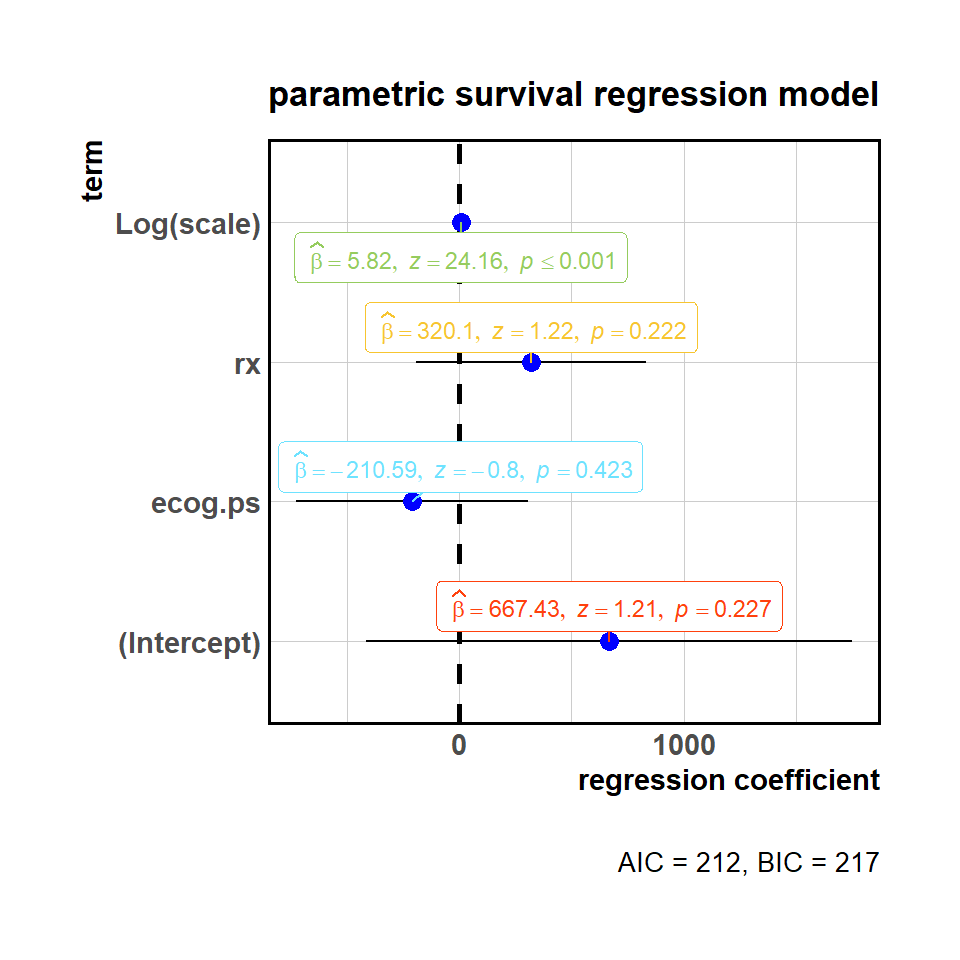
Aalen’s additive regression model for censored data (aareg)
# model
library(survival)
set.seed(123)
afit <- survival::aareg(
formula = Surv(time, status) ~ age + sex + ph.ecog,
data = lung,
dfbeta = TRUE
)
# plot
ggstatsplot::ggcoefstats(
x = afit,
title = "Aalen's additive regression model",
subtitle = "(for censored data)",
k = 3
)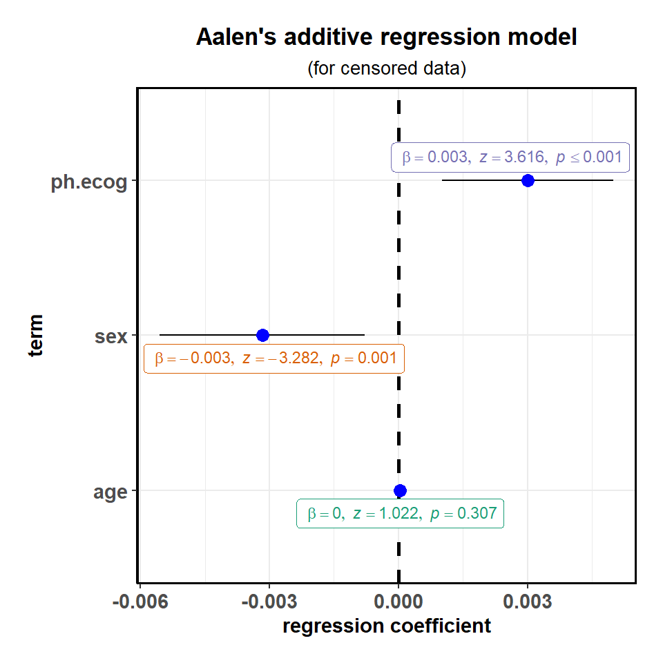
relative risk regression model for case-cohort studies (cch)
# setup
set.seed(123)
library(survival)
# examples come from cch documentation
subcoh <- nwtco$in.subcohort
selccoh <- with(nwtco, rel == 1 | subcoh == 1)
ccoh.data <- nwtco[selccoh, ]
ccoh.data$subcohort <- subcoh[selccoh]
## central-lab histology
ccoh.data$histol <- factor(ccoh.data$histol, labels = c("FH", "UH"))
## tumour stage
ccoh.data$stage <-
factor(ccoh.data$stage, labels = c("I", "II", "III", "IV"))
ccoh.data$age <- ccoh.data$age / 12 # Age in years
# model
fit.ccP <-
survival::cch(
formula = Surv(edrel, rel) ~ stage + histol + age,
data = ccoh.data,
subcoh = ~subcohort,
id = ~seqno,
cohort.size = 4028
)
# plot
ggstatsplot::ggcoefstats(
x = fit.ccP,
title = "relative risk regression model",
subtitle = "(for case-cohort studies)",
conf.level = 0.99
)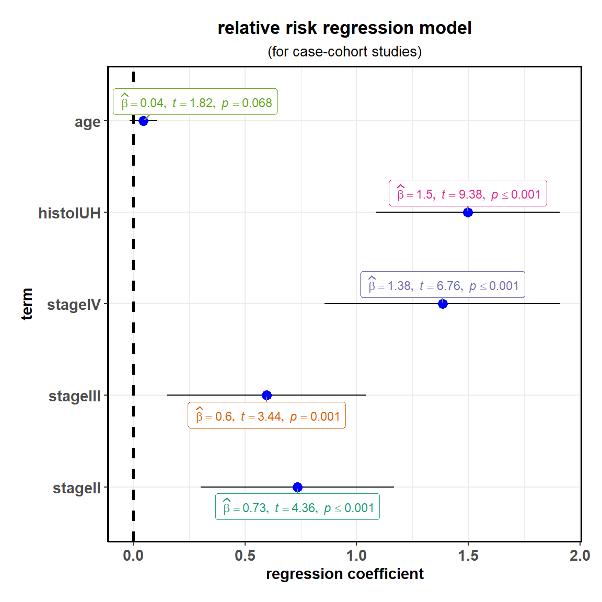
ridge regression (ridgelm)
For ridge regression, neither statistic values nor confidence intervals for estimates are available, so only estimates will be displayed.
# setup
set.seed(123)
library(MASS)
# model
names(longley)[1] <- "y"
mod <- MASS::lm.ridge(formula = y ~ ., data = longley)
# plot
ggstatsplot::ggcoefstats(
x = mod,
title = "ridge regression",
point.color = "red",
point.shape = 6,
point.size = 5
)
#> Note: No p-values and/or statistic available for regression coefficients from ridgelm object;
#> skipping labels with stats.
#> Note: No confidence intervals available for regression coefficients from ridgelm object, so skipping whiskers in the plot.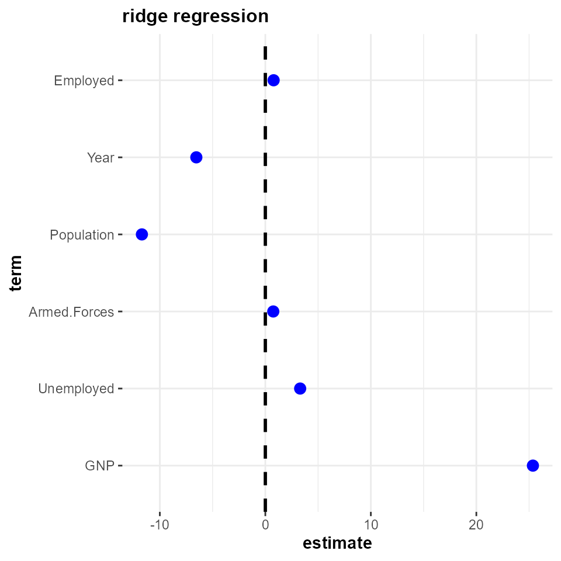
generalized additive models with integrated smoothness estimation (gam)
These model outputs contains both parametric and smooth terms. ggcoefstats only displays parametric terms.
# setup
set.seed(123)
library(mgcv)
# model
g <- mgcv::gam(
formula = mpg ~ s(hp) + am + qsec,
family = stats::quasi(),
data = mtcars
)
# plot
ggstatsplot::ggcoefstats(
x = g,
title = "generalized additive models \nwith integrated smoothness estimation",
subtitle = "using `mgcv` package"
)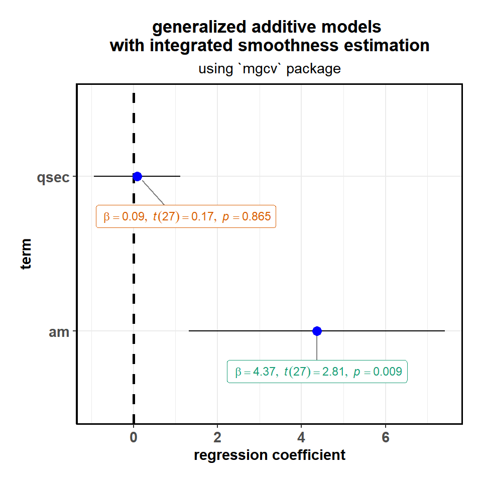
generalized additive model (Gam)
# setup
set.seed(123)
library(gam)
# model
g <- gam::gam(
formula = mpg ~ s(hp, 4) + am + qsec,
data = mtcars
)
# plot
ggstatsplot::ggcoefstats(
x = g,
title = "generalized additive model",
subtite = "(using `gam` package)"
)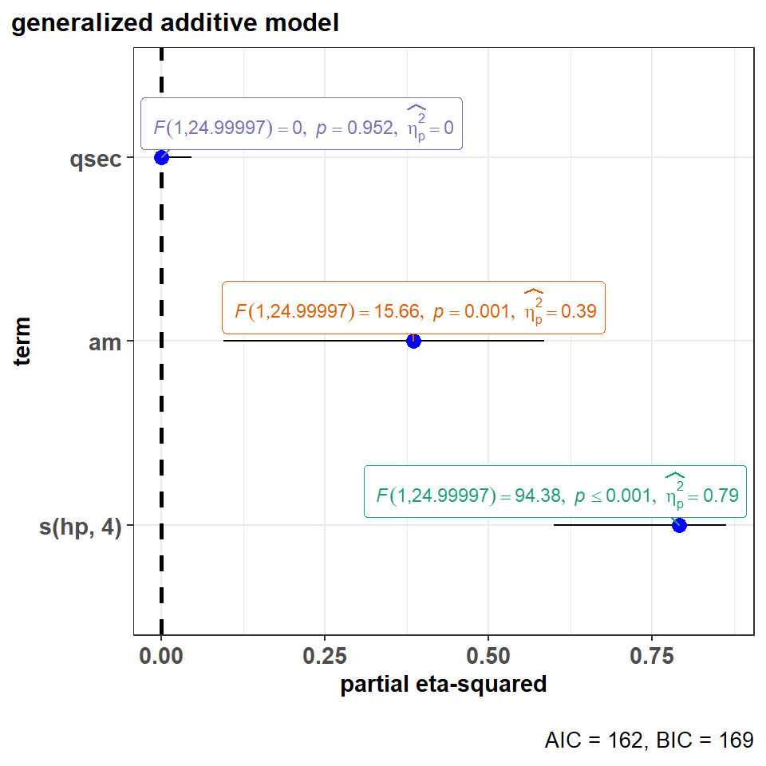
linear model using generalized least squares (gls)
The nlme package provides a function to fit a linear model using generalized least squares. The errors are allowed to be correlated and/or have unequal variances.
# for reproducibility
set.seed(123)
library(nlme)
# plot
ggstatsplot::ggcoefstats(
x = nlme::gls(
model = follicles ~ sin(2 * pi * Time) + cos(2 * pi * Time),
data = Ovary,
correlation = corAR1(form = ~ 1 | Mare)
),
point.color = "red",
stats.label.color = "black",
ggtheme = hrbrthemes::theme_ipsum_ps(),
ggstatsplot.layer = FALSE,
exclude.intercept = FALSE,
title = "generalized least squares model"
)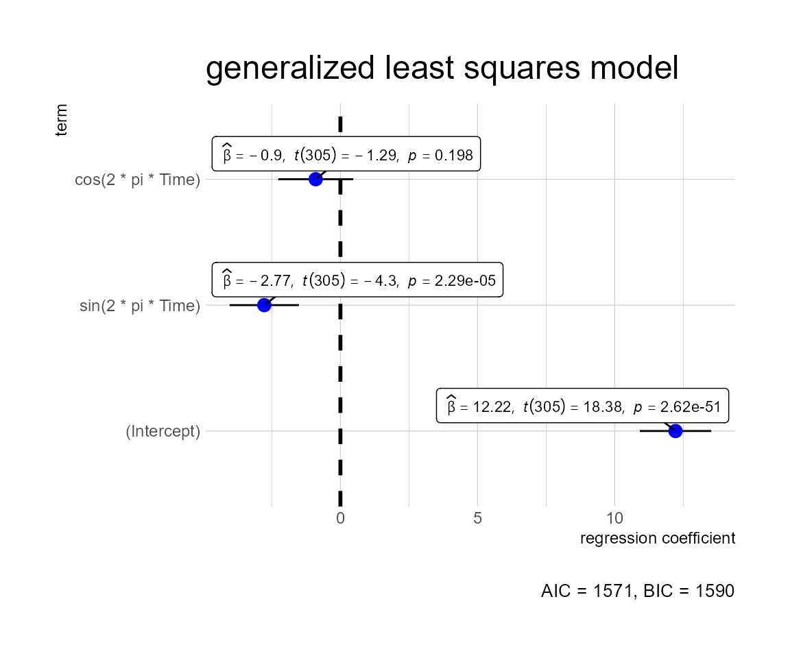
robust regression using an M estimator (rlm)
# for reproducibility
set.seed(123)
# plot
ggstatsplot::ggcoefstats(
x = MASS::rlm(
formula = mpg ~ am * cyl,
data = mtcars
),
point.color = "red",
point.shape = 15,
vline.color = "#CC79A7",
vline.linetype = "dotdash",
stats.label.size = 3.5,
stats.label.color = c("#0072B2", "#D55E00", "darkgreen"),
title = "robust regression using an M estimator",
ggtheme = ggthemes::theme_stata(),
ggstatsplot.layer = FALSE
)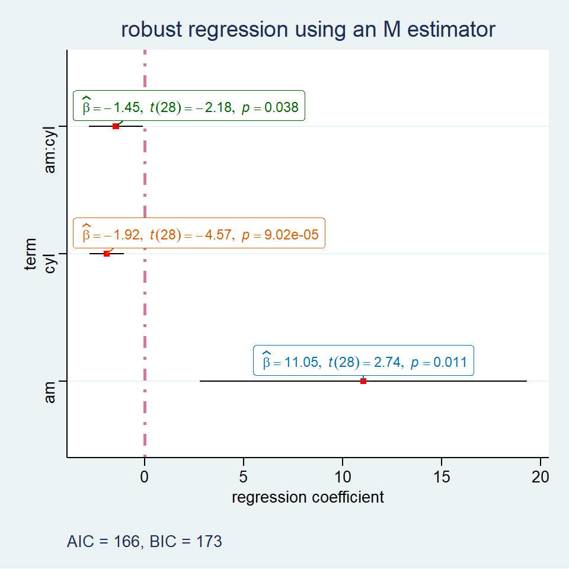
quantile regression (rq)
# for reproducibility
set.seed(123)
library(quantreg)
# loading dataframe needed for the analyses below
data(stackloss)
# plot
ggstatsplot::ggcoefstats(
x = quantreg::rq(
formula = stack.loss ~ stack.x,
data = stackloss,
method = "br"
),
se.type = "iid",
title = "quantile regression"
)
nonlinear quantile regression estimates (nlrq)
library(quantreg)
# preparing data
Dat <- NULL
Dat$x <- rep(1:25, 20)
set.seed(123)
Dat$y <- stats::SSlogis(Dat$x, 10, 12, 2) * rnorm(500, 1, 0.1)
# then fit the median using nlrq
Dat.nlrq <-
quantreg::nlrq(
formula = y ~ SSlogis(x, Asym, mid, scal),
data = Dat,
tau = 0.5,
trace = FALSE
)
# plot
ggstatsplot::ggcoefstats(
x = Dat.nlrq,
title = "non-linear quantile regression"
)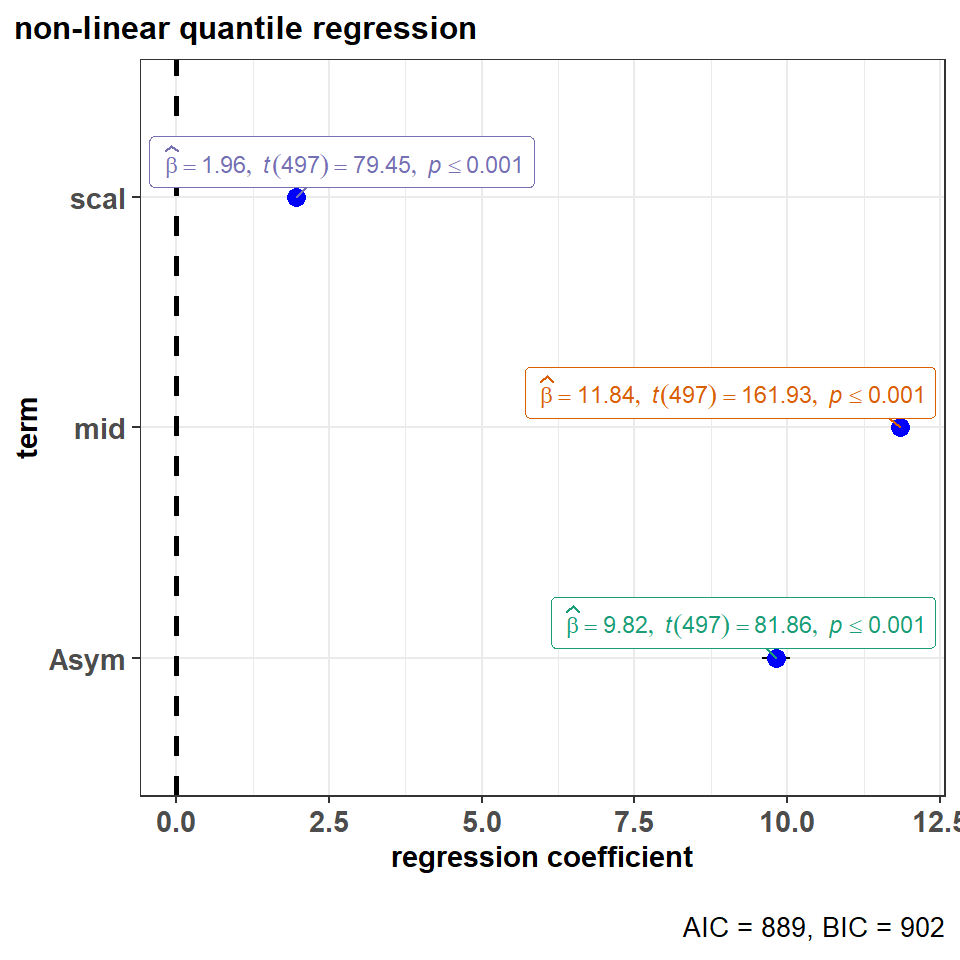
instrumental-variable regression (ivreg)
# setup
suppressPackageStartupMessages(library(AER))
set.seed(123)
data("CigarettesSW", package = "AER")
# model
ivr <- AER::ivreg(
formula = log(packs) ~ income | population,
data = CigarettesSW,
subset = year == "1995"
)
# plot
ggstatsplot::ggcoefstats(
x = ivr,
title = "instrumental-variable regression"
)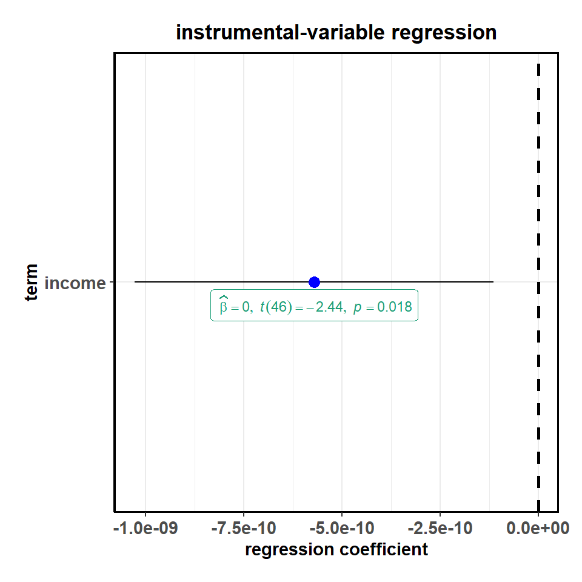
causal mediation analysis (mediate)
# setup
set.seed(123)
library(mediation)
data(jobs)
# base models
b <-
stats::lm(
formula = job_seek ~ treat + econ_hard + sex + age,
data = jobs
)
c <-
stats::lm(
formula = depress2 ~ treat + job_seek + econ_hard + sex + age,
data = jobs
)
# mediation model
mod <-
mediation::mediate(
model.m = b,
model.y = c,
sims = 50,
treat = "treat",
mediator = "job_seek"
)
# plot
ggstatsplot::ggcoefstats(
x = mod,
title = "causal mediation analysis"
)
#> Note: No model diagnostics information available for the object of class mediate .
#> Note: No p-values and/or statistic available for regression coefficients from mediate object;
#> skipping labels with stats.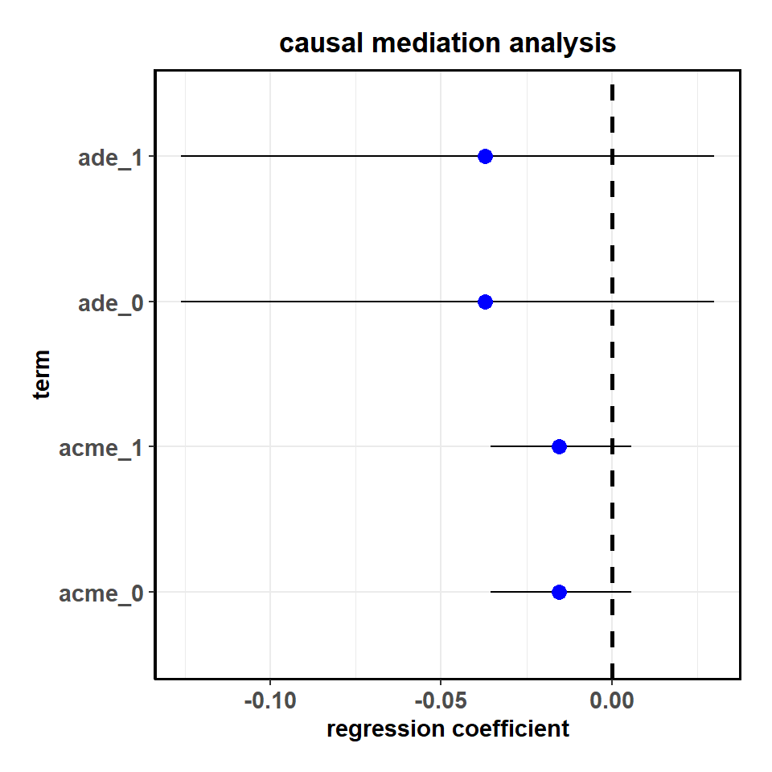
Model II regression (lmodel2)
# setup
set.seed(123)
library(lmodel2)
data(mod2ex2)
# model
Ex2.res <-
lmodel2::lmodel2(
formula = Prey ~ Predators,
data = mod2ex2,
range.y = "relative",
range.x = "relative",
nperm = 99
)
# plot
ggstatsplot::ggcoefstats(
x = Ex2.res,
exclude.intercept = FALSE,
title = "Model II regression"
)
#> Note: No p-values and/or statistic available for regression coefficients from lmodel2 object;
#> skipping labels with stats.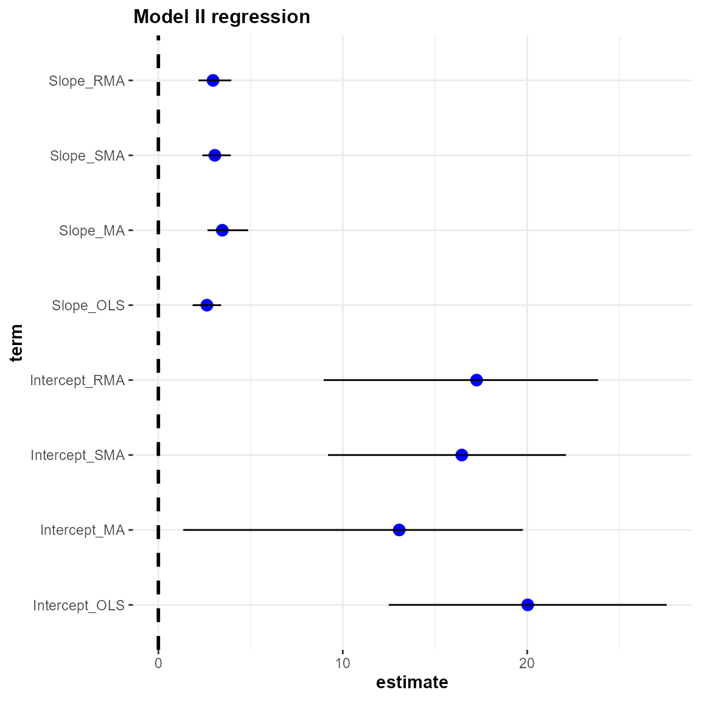
generalized additive models for location scale and shape (gamlss)
# setup
set.seed(123)
library(gamlss)
# model
g <- gamlss::gamlss(
formula = y ~ pb(x),
sigma.fo = ~ pb(x),
family = BCT,
data = abdom,
method = mixed(1, 20)
)
#> GAMLSS-RS iteration 1: Global Deviance = 4771.925
#> GAMLSS-CG iteration 1: Global Deviance = 4771.013
#> GAMLSS-CG iteration 2: Global Deviance = 4770.994
#> GAMLSS-CG iteration 3: Global Deviance = 4770.994
# plot
ggstatsplot::ggcoefstats(
x = g,
title = "generalized additive models \nfor location scale and shape"
)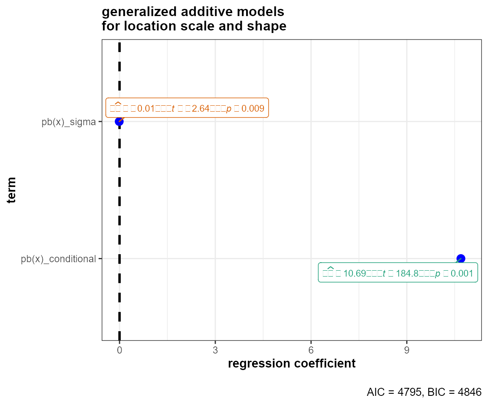
generalized method of moment estimation (gmm)
# setup
set.seed(123)
library(gmm)
# examples come from the "gmm" package
## CAPM test with GMM
data(Finance)
r <- Finance[1:300, 1:10]
rm <- Finance[1:300, "rm"]
rf <- Finance[1:300, "rf"]
z <- as.matrix(r - rf)
t <- nrow(z)
zm <- rm - rf
h <- matrix(zm, t, 1)
res <- gmm::gmm(z ~ zm, x = h)
# plot
ggstatsplot::ggcoefstats(
x = res,
package = "palettetown",
palette = "victreebel",
title = "generalized method of moment estimation"
)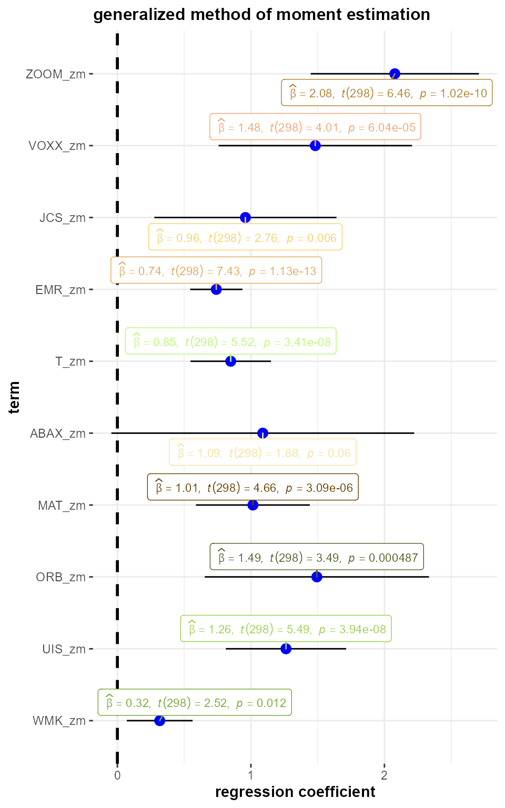
fit a GLM with lasso or elasticnet regularization (glmnet)
Although these models are not directly supported in ggcoefstats because of the sheer number of terms that are typically present. But this function can still be used to selectively show few of the terms of interest:
# setup
library(glmnet)
set.seed(2014)
# creating a dataframe
x <- matrix(rnorm(100 * 20), 100, 20)
y <- rnorm(100)
fit1 <- glmnet::glmnet(x, y)
(df <- broom::tidy(fit1))
#> # A tibble: 1,086 x 5
#> term step estimate lambda dev.ratio
#> <chr> <dbl> <dbl> <dbl> <dbl>
#> 1 (Intercept) 1 -0.207 0.152 0
#> 2 (Intercept) 2 -0.208 0.139 0.00464
#> 3 V16 2 -0.00292 0.139 0.00464
#> 4 V17 2 -0.0148 0.139 0.00464
#> 5 (Intercept) 3 -0.209 0.127 0.0111
#> 6 V16 3 -0.0150 0.127 0.0111
#> 7 V17 3 -0.0286 0.127 0.0111
#> 8 (Intercept) 4 -0.210 0.115 0.0165
#> 9 V16 4 -0.0260 0.115 0.0165
#> 10 V17 4 -0.0412 0.115 0.0165
#> # ... with 1,076 more rows
# displaying only a certain step
ggstatsplot::ggcoefstats(x = dplyr::filter(df, step == 4))
#> Note: For the object of class tbl_df , the argument `statistic` is not specified ('t', 'z', or 'f').
#> Statistical labels will therefore be skipped.
#> Note: No p-values and/or statistic available for regression coefficients from tbl_df object;
#> skipping labels with stats.
#> Note: No confidence intervals available for regression coefficients from tbl_df object, so skipping whiskers in the plot.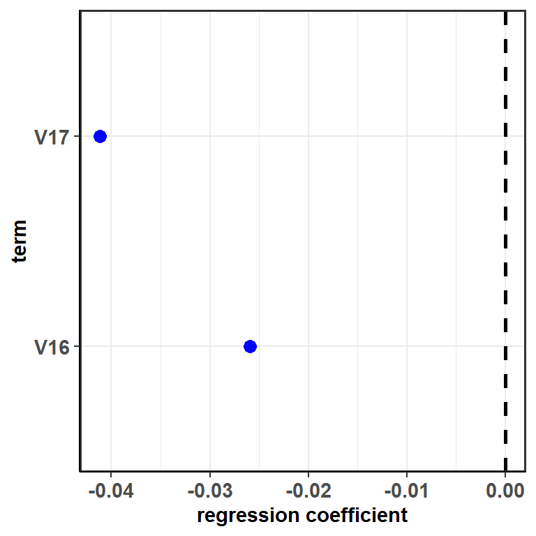
joint model to time-to-event data and multivariate longitudinal data (mjoint)
# setup
set.seed(123)
library(joineRML)
data(heart.valve)
# data
hvd <- heart.valve[!is.na(heart.valve$log.grad) &
!is.na(heart.valve$log.lvmi) &
heart.valve$num <= 50, ]
# model
fit <- joineRML::mjoint(
formLongFixed = list(
"grad" = log.grad ~ time + sex + hs,
"lvmi" = log.lvmi ~ time + sex
),
formLongRandom = list(
"grad" = ~ 1 | num,
"lvmi" = ~ time | num
),
formSurv = Surv(fuyrs, status) ~ age,
data = hvd,
inits = list("gamma" = c(0.11, 1.51, 0.80)),
timeVar = "time"
)
# extract the survival fixed effects and plot them
ggstatsplot::ggcoefstats(
x = fit,
conf.level = 0.99,
exclude.intercept = FALSE,
component = "longitudinal",
package = "yarrr",
palette = "basel",
title = "joint model to time-to-event data \nand multivariate longitudinal data"
)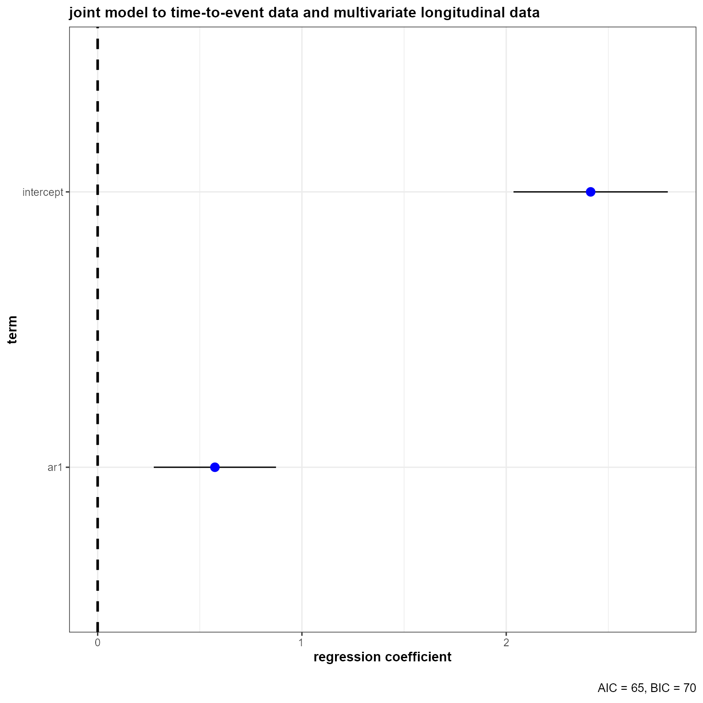
exponential-family random graph models (ergm)
# load the Florentine marriage network data
set.seed(123)
suppressPackageStartupMessages(library(ergm))
data(florentine)
# fit a model where the propensity to form ties between
# families depends on the absolute difference in wealth
gest <- ergm(flomarriage ~ edges + absdiff("wealth"))
# plot
ggstatsplot::ggcoefstats(
x = gest,
conf.level = 0.99,
title = "exponential-family random graph models"
)
TERGM by bootstrapped pseudolikelihood or MCMC MLE (btergm)
# setup
library(network)
library(btergm)
set.seed(123)
networks <- list()
for (i in 1:10) { # create 10 random networks with 10 actors
mat <- matrix(rbinom(100, 1, .25), nrow = 10, ncol = 10)
diag(mat) <- 0 # loops are excluded
nw <- network(mat) # create network object
networks[[i]] <- nw # add network to the list
}
covariates <- list()
for (i in 1:10) { # create 10 matrices as covariate
mat <- matrix(rnorm(100), nrow = 10, ncol = 10)
covariates[[i]] <- mat # add matrix to the list
}
# model
fit <- btergm::btergm(networks ~ edges + istar(2) +
edgecov(covariates), R = 100)
#> t=1 t=2 t=3 t=4 t=5 t=6 t=7 t=8 t=9 t=10
#> networks (row) 10 10 10 10 10 10 10 10 10 10
#> networks (col) 10 10 10 10 10 10 10 10 10 10
#> covariates (row) 10 10 10 10 10 10 10 10 10 10
#> covariates (col) 10 10 10 10 10 10 10 10 10 10
#> t=1 t=2 t=3 t=4 t=5 t=6 t=7 t=8 t=9 t=10
#> networks (row) 10 10 10 10 10 10 10 10 10 10
#> networks (col) 10 10 10 10 10 10 10 10 10 10
#> covariates (row) 10 10 10 10 10 10 10 10 10 10
#> covariates (col) 10 10 10 10 10 10 10 10 10 10
# plot
ggstatsplot::ggcoefstats(
x = fit,
title = "Terms used in Exponential Family Random Graph Models",
subtitle = "by bootstrapped pseudolikelihood or MCMC MLE"
)
#> Note: No model diagnostics information available for the object of class btergm .
#> Note: No p-values and/or statistic available for regression coefficients from btergm object;
#> skipping labels with stats.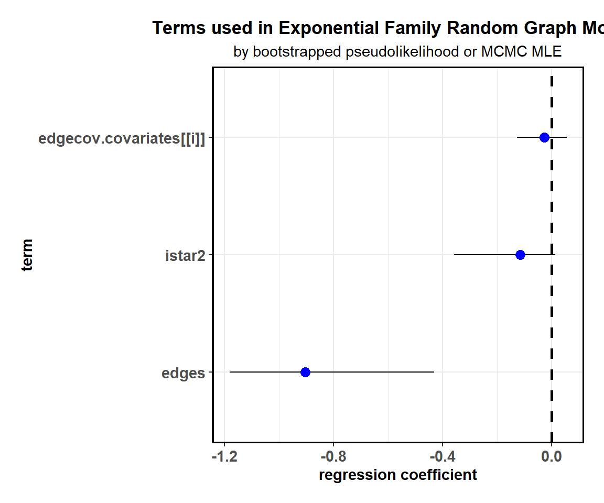
generalized autoregressive conditional heteroscedastic (garch)
# setup
set.seed(123)
library(tseries)
data(EuStockMarkets)
dax <- diff(log(EuStockMarkets))[, "DAX"]
dax.garch <- tseries::garch(x = dax, trace = FALSE)
# plot
ggstatsplot::ggcoefstats(
x = dax.garch,
title = "generalized autoregressive \nconditional heteroscedastic (GARCH)"
)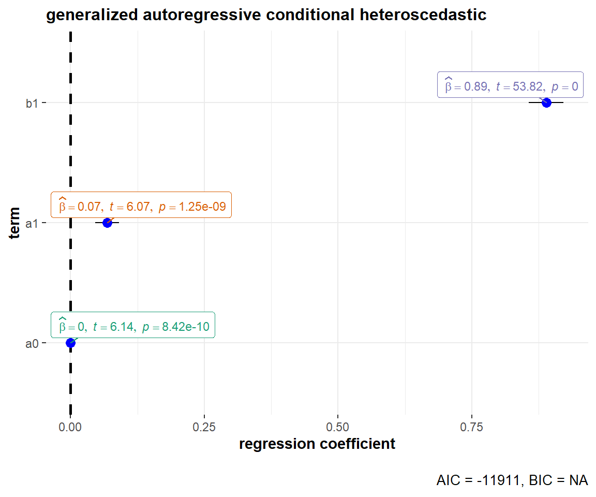
maximum-likelihood fitting of univariate distributions (fitdistr)
# model
set.seed(123)
library(MASS)
x <- rnorm(100, 5, 2)
fit <- MASS::fitdistr(x, dnorm, list(mean = 3, sd = 1))
# plot
ggstatsplot::ggcoefstats(
x = fit,
title = "maximum-likelihood fitting of \nunivariate distributions",
ggtheme = ggthemes::theme_pander()
)
#> Note: No p-values and/or statistic available for regression coefficients from fitdistr object;
#> skipping labels with stats.
maximum likelihood estimation (mle2)
# setup
set.seed(123)
library(bbmle)
# data
x <- 0:10
y <- c(26, 17, 13, 12, 20, 5, 9, 8, 5, 4, 8)
d <- data.frame(x, y)
# custom function
LL <- function(ymax = 15, xhalf = 6) {
-sum(stats::dpois(y, lambda = ymax / (1 + x / xhalf), log = TRUE))
}
# use default parameters of LL
fit <- bbmle::mle2(LL, fixed = list(xhalf = 6))
# plot
ggstatsplot::ggcoefstats(
x = fit,
title = "maximum likelihood estimation",
ggtheme = ggthemes::theme_excel_new()
)
#> Note: No model diagnostics information available for the object of class mle2 .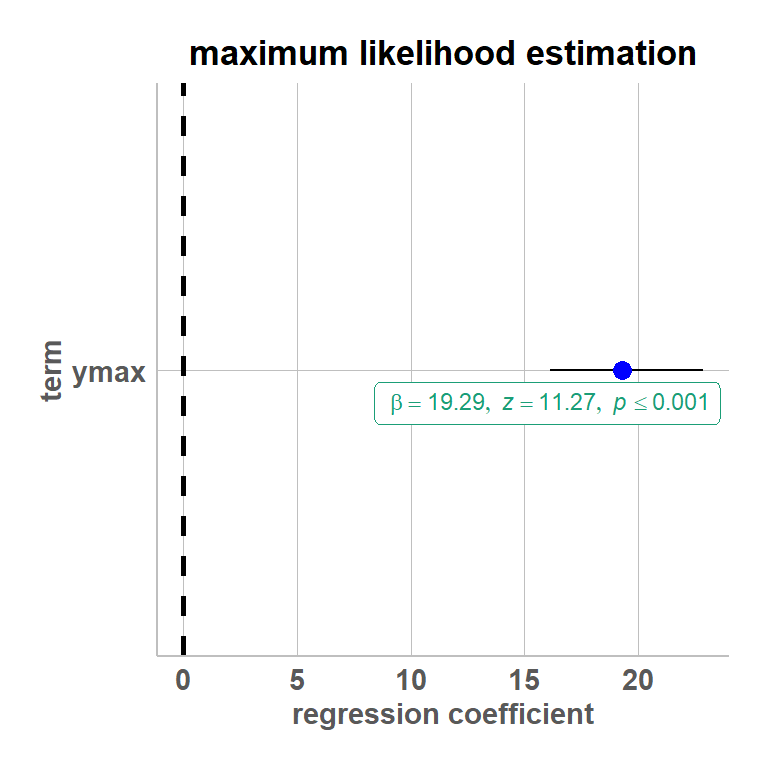
Cochrane-Orcutt estimation (orcutt)
# model
library(orcutt)
set.seed(123)
reg <- stats::lm(formula = mpg ~ wt + qsec + disp, data = mtcars)
co <- orcutt::cochrane.orcutt(reg)
# plot
ggstatsplot::ggcoefstats(
x = co,
title = "Cochrane-Orcutt estimation"
)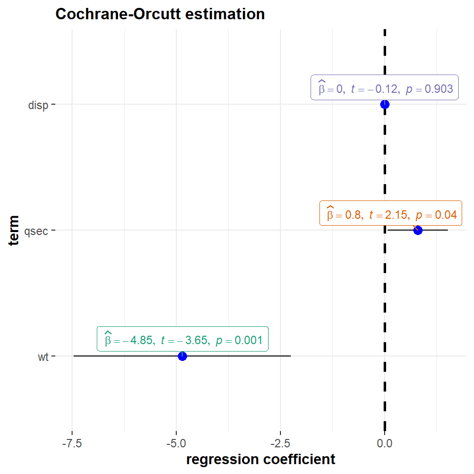
confusion matrix (confusionMatrix)
# setup
library(caret)
set.seed(123)
# setting up confusion matrix
two_class_sample1 <- as.factor(sample(letters[1:2], 100, TRUE))
two_class_sample2 <- as.factor(sample(letters[1:2], 100, TRUE))
two_class_cm <- caret::confusionMatrix(
two_class_sample1,
two_class_sample2
)
# plot
ggstatsplot::ggcoefstats(
x = two_class_cm,
by.class = TRUE,
title = "confusion matrix"
)
#> Note: No model diagnostics information available for the object of class confusionMatrix .
#> Note: No p-values and/or statistic available for regression coefficients from confusionMatrix object;
#> skipping labels with stats.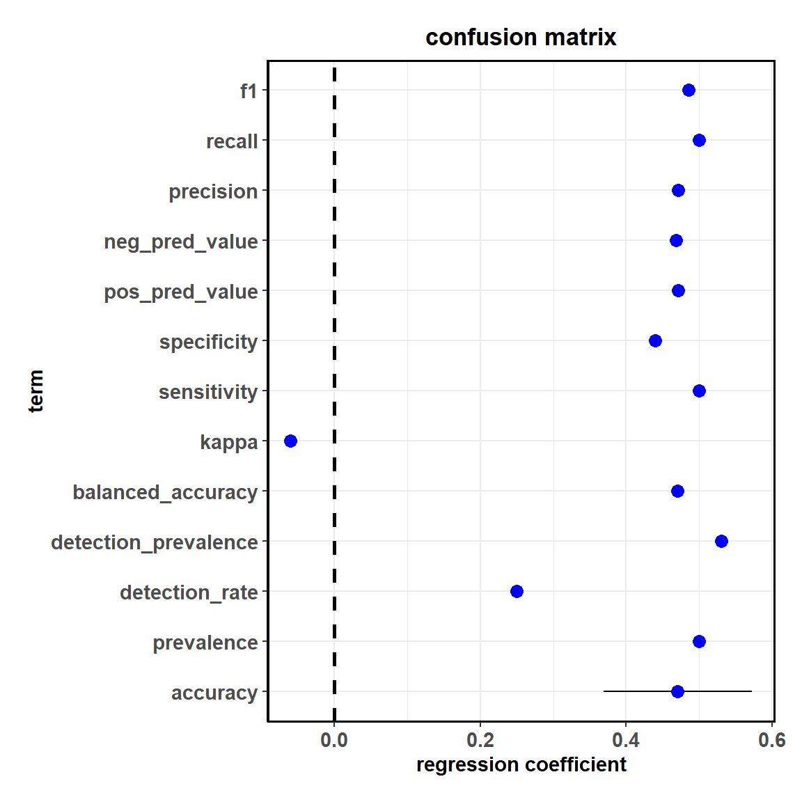
Summary measures for count data (epi.2by2)
# setup
set.seed(123)
library(epiR)
# creating a model
dat <- matrix(c(13, 2163, 5, 3349), nrow = 2, byrow = TRUE)
rownames(dat) <- c("DF+", "DF-")
colnames(dat) <- c("FUS+", "FUS-")
fit <- epiR::epi.2by2(
dat = as.table(dat),
method = "cross.sectional",
conf.level = 0.95,
units = 100,
outcome = "as.columns"
)
# tidy dataframe
ggstatsplot::ggcoefstats(
x = fit,
parameters = "moa",
title = "Summary measures for count data \npresented in a 2 by 2 table"
)
#> Note: No model diagnostics information available for the object of class epi.2by2 .
#> Note: No p-values and/or statistic available for regression coefficients from epi.2by2 object;
#> skipping labels with stats.
Bayesian generalized (non-)linear multivariate multilevel models (brmsfit)
# setup
set.seed(123)
library(brms)
# prior
bprior1 <- prior(student_t(5, 0, 10), class = b) +
prior(cauchy(0, 2), class = sd)
# model
fit1 <- brms::brm(
formula = count ~ Age + Base * Trt + (1 | patient),
data = epilepsy,
family = poisson(),
prior = bprior1,
silent = TRUE
)
#>
#> SAMPLING FOR MODEL 'fe0a44bc352f0b7fbbe8bc1fa1f056ad' NOW (CHAIN 1).
#> Chain 1:
#> Chain 1: Gradient evaluation took 0 seconds
#> Chain 1: 1000 transitions using 10 leapfrog steps per transition would take 0 seconds.
#> Chain 1: Adjust your expectations accordingly!
#> Chain 1:
#> Chain 1:
#> Chain 1: Iteration: 1 / 2000 [ 0%] (Warmup)
#> Chain 1: Iteration: 200 / 2000 [ 10%] (Warmup)
#> Chain 1: Iteration: 400 / 2000 [ 20%] (Warmup)
#> Chain 1: Iteration: 600 / 2000 [ 30%] (Warmup)
#> Chain 1: Iteration: 800 / 2000 [ 40%] (Warmup)
#> Chain 1: Iteration: 1000 / 2000 [ 50%] (Warmup)
#> Chain 1: Iteration: 1001 / 2000 [ 50%] (Sampling)
#> Chain 1: Iteration: 1200 / 2000 [ 60%] (Sampling)
#> Chain 1: Iteration: 1400 / 2000 [ 70%] (Sampling)
#> Chain 1: Iteration: 1600 / 2000 [ 80%] (Sampling)
#> Chain 1: Iteration: 1800 / 2000 [ 90%] (Sampling)
#> Chain 1: Iteration: 2000 / 2000 [100%] (Sampling)
#> Chain 1:
#> Chain 1: Elapsed Time: 8.297 seconds (Warm-up)
#> Chain 1: 4.647 seconds (Sampling)
#> Chain 1: 12.944 seconds (Total)
#> Chain 1:
#>
#> SAMPLING FOR MODEL 'fe0a44bc352f0b7fbbe8bc1fa1f056ad' NOW (CHAIN 2).
#> Chain 2:
#> Chain 2: Gradient evaluation took 0 seconds
#> Chain 2: 1000 transitions using 10 leapfrog steps per transition would take 0 seconds.
#> Chain 2: Adjust your expectations accordingly!
#> Chain 2:
#> Chain 2:
#> Chain 2: Iteration: 1 / 2000 [ 0%] (Warmup)
#> Chain 2: Iteration: 200 / 2000 [ 10%] (Warmup)
#> Chain 2: Iteration: 400 / 2000 [ 20%] (Warmup)
#> Chain 2: Iteration: 600 / 2000 [ 30%] (Warmup)
#> Chain 2: Iteration: 800 / 2000 [ 40%] (Warmup)
#> Chain 2: Iteration: 1000 / 2000 [ 50%] (Warmup)
#> Chain 2: Iteration: 1001 / 2000 [ 50%] (Sampling)
#> Chain 2: Iteration: 1200 / 2000 [ 60%] (Sampling)
#> Chain 2: Iteration: 1400 / 2000 [ 70%] (Sampling)
#> Chain 2: Iteration: 1600 / 2000 [ 80%] (Sampling)
#> Chain 2: Iteration: 1800 / 2000 [ 90%] (Sampling)
#> Chain 2: Iteration: 2000 / 2000 [100%] (Sampling)
#> Chain 2:
#> Chain 2: Elapsed Time: 18.752 seconds (Warm-up)
#> Chain 2: 43.412 seconds (Sampling)
#> Chain 2: 62.164 seconds (Total)
#> Chain 2:
#>
#> SAMPLING FOR MODEL 'fe0a44bc352f0b7fbbe8bc1fa1f056ad' NOW (CHAIN 3).
#> Chain 3:
#> Chain 3: Gradient evaluation took 0 seconds
#> Chain 3: 1000 transitions using 10 leapfrog steps per transition would take 0 seconds.
#> Chain 3: Adjust your expectations accordingly!
#> Chain 3:
#> Chain 3:
#> Chain 3: Iteration: 1 / 2000 [ 0%] (Warmup)
#> Chain 3: Iteration: 200 / 2000 [ 10%] (Warmup)
#> Chain 3: Iteration: 400 / 2000 [ 20%] (Warmup)
#> Chain 3: Iteration: 600 / 2000 [ 30%] (Warmup)
#> Chain 3: Iteration: 800 / 2000 [ 40%] (Warmup)
#> Chain 3: Iteration: 1000 / 2000 [ 50%] (Warmup)
#> Chain 3: Iteration: 1001 / 2000 [ 50%] (Sampling)
#> Chain 3: Iteration: 1200 / 2000 [ 60%] (Sampling)
#> Chain 3: Iteration: 1400 / 2000 [ 70%] (Sampling)
#> Chain 3: Iteration: 1600 / 2000 [ 80%] (Sampling)
#> Chain 3: Iteration: 1800 / 2000 [ 90%] (Sampling)
#> Chain 3: Iteration: 2000 / 2000 [100%] (Sampling)
#> Chain 3:
#> Chain 3: Elapsed Time: 6.748 seconds (Warm-up)
#> Chain 3: 4.454 seconds (Sampling)
#> Chain 3: 11.202 seconds (Total)
#> Chain 3:
#>
#> SAMPLING FOR MODEL 'fe0a44bc352f0b7fbbe8bc1fa1f056ad' NOW (CHAIN 4).
#> Chain 4:
#> Chain 4: Gradient evaluation took 0 seconds
#> Chain 4: 1000 transitions using 10 leapfrog steps per transition would take 0 seconds.
#> Chain 4: Adjust your expectations accordingly!
#> Chain 4:
#> Chain 4:
#> Chain 4: Iteration: 1 / 2000 [ 0%] (Warmup)
#> Chain 4: Iteration: 200 / 2000 [ 10%] (Warmup)
#> Chain 4: Iteration: 400 / 2000 [ 20%] (Warmup)
#> Chain 4: Iteration: 600 / 2000 [ 30%] (Warmup)
#> Chain 4: Iteration: 800 / 2000 [ 40%] (Warmup)
#> Chain 4: Iteration: 1000 / 2000 [ 50%] (Warmup)
#> Chain 4: Iteration: 1001 / 2000 [ 50%] (Sampling)
#> Chain 4: Iteration: 1200 / 2000 [ 60%] (Sampling)
#> Chain 4: Iteration: 1400 / 2000 [ 70%] (Sampling)
#> Chain 4: Iteration: 1600 / 2000 [ 80%] (Sampling)
#> Chain 4: Iteration: 1800 / 2000 [ 90%] (Sampling)
#> Chain 4: Iteration: 2000 / 2000 [100%] (Sampling)
#> Chain 4:
#> Chain 4: Elapsed Time: 5.811 seconds (Warm-up)
#> Chain 4: 4.998 seconds (Sampling)
#> Chain 4: 10.809 seconds (Total)
#> Chain 4:
# plot
ggstatsplot::ggcoefstats(
x = fit1,
exclude.intercept = FALSE,
conf.method = "HPDinterval",
title = "Bayesian generalized (non-)linear \nmultivariate multilevel models",
subtitle = "using `brms` package"
)
#> Note: No p-values and/or statistic available for regression coefficients from brmsfit object;
#> skipping labels with stats.
Bayesian regression models via Stan (stanreg)
# set up
set.seed(123)
library(rstanarm)
# model
fit <- rstanarm::stan_glm(formula = mpg ~ wt + am, data = mtcars, chains = 1)
#>
#> SAMPLING FOR MODEL 'continuous' NOW (CHAIN 1).
#> Chain 1:
#> Chain 1: Gradient evaluation took 0 seconds
#> Chain 1: 1000 transitions using 10 leapfrog steps per transition would take 0 seconds.
#> Chain 1: Adjust your expectations accordingly!
#> Chain 1:
#> Chain 1:
#> Chain 1: Iteration: 1 / 2000 [ 0%] (Warmup)
#> Chain 1: Iteration: 200 / 2000 [ 10%] (Warmup)
#> Chain 1: Iteration: 400 / 2000 [ 20%] (Warmup)
#> Chain 1: Iteration: 600 / 2000 [ 30%] (Warmup)
#> Chain 1: Iteration: 800 / 2000 [ 40%] (Warmup)
#> Chain 1: Iteration: 1000 / 2000 [ 50%] (Warmup)
#> Chain 1: Iteration: 1001 / 2000 [ 50%] (Sampling)
#> Chain 1: Iteration: 1200 / 2000 [ 60%] (Sampling)
#> Chain 1: Iteration: 1400 / 2000 [ 70%] (Sampling)
#> Chain 1: Iteration: 1600 / 2000 [ 80%] (Sampling)
#> Chain 1: Iteration: 1800 / 2000 [ 90%] (Sampling)
#> Chain 1: Iteration: 2000 / 2000 [100%] (Sampling)
#> Chain 1:
#> Chain 1: Elapsed Time: 0.078 seconds (Warm-up)
#> Chain 1: 0.086 seconds (Sampling)
#> Chain 1: 0.164 seconds (Total)
#> Chain 1:
# plot
ggstatsplot::ggcoefstats(
x = fit,
title = "Bayesian generalized linear models via Stan"
)
#> Note: No p-values and/or statistic available for regression coefficients from stanreg object;
#> skipping labels with stats.
multivariate generalized linear mixed models (MCMCglmm)
# setup
set.seed(123)
library(MCMCglmm)
# model
mm0 <- MCMCglmm::MCMCglmm(
fixed = scale(Reaction) ~ scale(Days),
random = ~Subject,
data = sleepstudy,
nitt = 4000,
pr = TRUE,
verbose = FALSE
)
# plot
ggstatsplot::ggcoefstats(
x = mm0,
title = "multivariate generalized linear mixed model",
conf.method = "HPDinterval",
exclude.intercept = FALSE,
robust = TRUE
)
#> Note: No model diagnostics information available for the object of class MCMCglmm .
#> Note: No p-values and/or statistic available for regression coefficients from MCMCglmm object;
#> skipping labels with stats.
Markov Chain Monte Carlo objects (mcmc)
# loading the data
set.seed(123)
library(coda)
data(line)
# select first chain
x1 <- line[[1]]
# plot
ggstatsplot::ggcoefstats(
x = x1,
title = "Markov Chain Monte Carlo objects",
robust = TRUE,
ess = TRUE
)
#> Note: No model diagnostics information available for the object of class mcmc .
#> Note: No p-values and/or statistic available for regression coefficients from mcmc object;
#> skipping labels with stats.
MCMC with Just Another Gibbs Sampler (rjags)
# setup
set.seed(123)
library(R2jags)
# An example model file is given in:
model.file <- system.file(package = "R2jags", "model", "schools.txt")
# data
J <- 8.0
y <- c(28.4, 7.9, -2.8, 6.8, -0.6, 0.6, 18.0, 12.2)
sd <- c(14.9, 10.2, 16.3, 11.0, 9.4, 11.4, 10.4, 17.6)
# setting up model
jags.data <- list("y", "sd", "J")
jags.params <- c("mu", "sigma", "theta")
jags.inits <- function() {
list("mu" = rnorm(1), "sigma" = runif(1), "theta" = rnorm(J))
}
# model fitting
jagsfit <- R2jags::jags(
data = list("y", "sd", "J"),
inits = jags.inits,
jags.params,
n.iter = 10,
model.file = model.file
)
#> Compiling model graph
#> Resolving undeclared variables
#> Allocating nodes
#> Graph information:
#> Observed stochastic nodes: 8
#> Unobserved stochastic nodes: 10
#> Total graph size: 41
#>
#> Initializing model
# plot
ggstatsplot::ggcoefstats(
x = jagsfit,
title = "Markov Chain Monte Carlo with\nJust Another Gibbs Sampler",
point.color = "darkgreen"
)
#> Note: No model diagnostics information available for the object of class rjags .
#> Note: No p-values and/or statistic available for regression coefficients from rjags object;
#> skipping labels with stats.
dataframes (tbl_df, tbl, data.frame)
Sometimes you don’t have a model object but a custom dataframe that you want display using this function. If a data frame is to be plotted, it must contain columns named term (names of predictors), and estimate (corresponding estimates of coefficients or other quantities of interest). Other optional columns are conf.low and conf.high (for confidence intervals), and p.value. You will also have to specify the type of statistic relevant for regression models ("t", "z", "f") in case you want to display statistical labels.
# set up
set.seed(123)
library(ggstatsplot)
library(gapminder)
# data for running regression models
df <-
dplyr::filter(.data = gapminder::gapminder, continent != "Oceania")
# saving results from regression
df_results <- purrr::pmap(
.l = list(
data = list(df),
formula = list(scale(lifeExp) ~ scale(gdpPercap) + (gdpPercap |
country)),
grouping.vars = alist(continent),
output = list("tidy", "glance")
),
.f = groupedstats::grouped_lmer
) %>%
dplyr::full_join(x = .[[1]], y = .[[2]], by = "continent")
# modifying the results so to be compatible with the `ggcoefstats` requirement
(df_results %<>%
dplyr::filter(.data = ., term != "(Intercept)") %>%
dplyr::select(
.data = .,
-effect,
-term,
term = continent,
statistic = t.value
))
#> # A tibble: 4 x 14
#> term estimate std.error statistic conf.low conf.high p.value
#> <fct> <dbl> <dbl> <dbl> <dbl> <dbl> <dbl>
#> 1 Asia 7.35 1.27 5.79 4.86 9.84 7.00e- 9
#> 2 Euro~ 1.52 0.238 6.36 1.05 1.98 2.02e-10
#> 3 Afri~ 1.54 0.348 4.43 0.860 2.22 9.49e- 6
#> 4 Amer~ 1.88 0.233 8.06 1.42 2.34 7.64e-16
#> # ... with 7 more variables: significance <chr>, sigma <dbl>,
#> # logLik <dbl>, AIC <dbl>, BIC <dbl>, REMLcrit <dbl>, df.residual <int>
# plot
ggstatsplot::ggcoefstats(
x = df_results,
statistic = "t",
sort = "ascending",
title = "Relationship between life expectancy and GDP",
subtitle = "Source: Gapminder foundation",
caption = "Data from Oceania continent not included"
)meta-analysis
In case the estimates you are displaying come from multiple studies, you can also use this function to carry out random-effects meta-analysis (as implemented in the metafor package; see metafor::rma()).
The dataframe you enter must contain at the minimum the following three columns- term, estimate, std.error.
# let's make up a dataframe (with minimum amount of details)
df_min <- tibble::tribble(
~term, ~estimate, ~std.error,
"study1", 0.0665, 0.778,
"study2", 0.542, 0.280,
"study3", 0.045, 0.030,
"study4", 0.500, 0.708,
"study5", 0.032, 0.280,
"study6", 0.085, 0.030
)
# plot
ggstatsplot::ggcoefstats(
x = df_min,
meta.analytic.effect = TRUE,
point.color = "red"
)
#> Note: For the object of class tbl_df , the argument `statistic` is not specified ('t', 'z', or 'f').
#> Statistical labels will therefore be skipped.
#> Note: No p-values and/or statistic available for regression coefficients from tbl_df object;
#> skipping labels with stats.Or you can also provide a dataframe containing all the other relevant information for making labels with statistical information.
# let's make up a dataframe (with all available details)
df_full <- tibble::tribble(
~term, ~statistic, ~estimate, ~std.error, ~p.value, ~df.residual,
"study1", 0.158, 0.0665, 0.778, 0.875, 5L,
"study2", 1.33, 0.542, 0.280, 0.191, 10L,
"study3", 1.24, 0.045, 0.030, 0.001, 12L,
"study4", 0.156, 0.500, 0.708, 0.885, 8L,
"study5", 0.33, 0.032, 0.280, 0.101, 2L,
"study6", 1.04, 0.085, 0.030, 0.001, 3L
)
# plot
ggstatsplot::ggcoefstats(
x = df_full,
meta.analytic.effect = TRUE,
statistic = "t",
package = "LaCroixColoR",
palette = "paired"
)And much more…
This vignette was supposed to give a comprehensive account of regression models supported by ggcoefstats. The list of supported models will keep expanding as additional tidiers are added to the broom and broom.mixed package: https://broom.tidyverse.org/articles/available-methods.html
Note that not all models supported by broom will be supported by ggcoefstats. In particular, classes of objects for which there is no column for estimates present (e.g., kmeans, optim, muhaz, survdiff, zoo, etc.) are not supported.
Suggestions
If you find any bugs or have any suggestions/remarks, please file an issue on GitHub: https://github.com/IndrajeetPatil/ggstatsplot/issues
Session Information
For details, see- https://indrajeetpatil.github.io/ggstatsplot/articles/web_only/session_info.html